| ComCat M4.71 (nc73292360), Point Sources | |
|---|---|
| Num Simulations | 100000 |
| Start Time | 2019/10/15 19:42:31 UTC |
| Start Time Epoch Milliseconds | 1571168551550 |
| Duration | 10 Years |
| Includes Spontaneous? | false |
| Historical Ruptures | (none) |
| Config Generated With | u3etas_comcat_event_config_builder.sh --event-id nc73292360 --region 38.5,-122.75,36.25,-120.5 --num-simulations 100000 --days-before 7 --hpc-site USC_HPC --nodes 36 --hours 24 --queue scec |
| Magnitude | 1 Hour Prob | 1 Day Prob | 1 Week Prob | 1 Month Prob | 1 Year Prob | 10 Year Prob |
|---|---|---|---|---|---|---|
| M≥3 | 0.450 (45.01%) | 0.777 (77.66%) | 0.880 (88.04%) | 0.925 (92.47%) | 0.963 (96.34%) | 0.979 (97.94%) |
| M≥3.5 | 0.177 (17.70%) | 0.391 (39.09%) | 0.506 (50.64%) | 0.577 (57.74%) | 0.669 (66.93%) | 0.728 (72.80%) |
| M≥4 | 0.062 (6.22%) | 0.153 (15.33%) | 0.212 (21.21%) | 0.253 (25.34%) | 0.316 (31.59%) | 0.362 (36.20%) |
| M≥4.5 | 0.021 (2.12%) | 0.056 (5.59%) | 0.080 (7.98%) | 0.098 (9.78%) | 0.126 (12.59%) | 0.149 (14.87%) |
| M≥4.71 | 0.014 (1.39%) | 0.037 (3.72%) | 0.053 (5.30%) | 0.066 (6.56%) | 0.085 (8.51%) | 0.102 (10.20%) |
| M≥5 | 8.17E-3 (0.82%) | 0.022 (2.16%) | 0.031 (3.14%) | 0.039 (3.89%) | 0.051 (5.05%) | 0.061 (6.08%) |
| M≥5.5 | 4.12E-3 (0.41%) | 0.010 (1.03%) | 0.015 (1.49%) | 0.019 (1.87%) | 0.025 (2.46%) | 0.030 (2.98%) |
| M≥6 | 2.74E-3 (0.27%) | 6.61E-3 (0.66%) | 9.52E-3 (0.95%) | 0.012 (1.19%) | 0.016 (1.57%) | 0.019 (1.89%) |
| M≥6.5 | 6.70E-4 (0.07%) | 1.82E-3 (0.18%) | 2.82E-3 (0.28%) | 3.57E-3 (0.36%) | 4.89E-3 (0.49%) | 6.08E-3 (0.61%) |
| M≥7 | 1.40E-4 (0.01%) | 6.00E-4 (0.06%) | 8.90E-4 (0.09%) | 1.05E-3 (0.10%) | 1.53E-3 (0.15%) | 1.94E-3 (0.19%) |
| M≥7.5 | 1.00E-5 (0.00%) | 3.00E-5 (0.00%) | 7.00E-5 (0.01%) | 8.00E-5 (0.01%) | 1.50E-4 (0.01%) | 2.10E-4 (0.02%) |
| M≥8 | 0.000 (0.00%) | 0.000 (0.00%) | 0.000 (0.00%) | 0.000 (0.00%) | 2.00E-5 (0.00%) | 3.00E-5 (0.00%) |
Legend
| Mag | Mean | 2.5 %ile | 97.5 %ile | Median | Mode | 10 yr Probability | 10 yr Supra-Seis Prob | Primary Aftershocks Mean |
|---|---|---|---|---|---|---|---|---|
| M≥2.5 | 47.700 | 6.000 | 154.000 | 15.000 | 13.000 | 1.000 (100.00%) | 0.018 (1.84%) | 11.392 |
| M≥2.6 | 37.896 | 4.000 | 122.000 | 12.000 | 11.000 | 1.000 (99.99%) | 0.018 (1.84%) | 9.053 |
| M≥2.7 | 30.108 | 3.000 | 97.000 | 10.000 | 8.000 | 0.999 (99.94%) | 0.018 (1.84%) | 7.194 |
| M≥2.8 | 23.924 | 2.000 | 78.000 | 8.000 | 6.000 | 0.997 (99.73%) | 0.018 (1.84%) | 5.717 |
| M≥2.9 | 19.010 | 1.000 | 63.000 | 6.000 | 5.000 | 0.992 (99.17%) | 0.018 (1.84%) | 4.550 |
| M≥3 | 15.096 | 1.000 | 50.000 | 5.000 | 4.000 | 0.979 (97.94%) | 0.018 (1.84%) | 3.617 |
| M≥3.1 | 11.983 | 0.000 | 40.000 | 4.000 | 3.000 | 0.955 (95.50%) | 0.018 (1.84%) | 2.872 |
| M≥3.2 | 9.523 | 0.000 | 32.000 | 3.000 | 2.000 | 0.917 (91.73%) | 0.018 (1.84%) | 2.285 |
| M≥3.3 | 7.561 | 0.000 | 26.000 | 2.000 | 1.000 | 0.866 (86.59%) | 0.018 (1.84%) | 1.816 |
| M≥3.4 | 6.004 | 0.000 | 21.000 | 2.000 | 1.000 | 0.801 (80.14%) | 0.018 (1.84%) | 1.443 |
| M≥3.5 | 4.770 | 0.000 | 17.000 | 1.000 | 1.000 | 0.728 (72.80%) | 0.018 (1.84%) | 1.146 |
| M≥3.6 | 3.790 | 0.000 | 14.000 | 1.000 | 0.000 | 0.649 (64.87%) | 0.018 (1.84%) | 0.910 |
| M≥3.7 | 3.013 | 0.000 | 12.000 | 1.000 | 0.000 | 0.570 (56.98%) | 0.018 (1.84%) | 0.722 |
| M≥3.8 | 2.398 | 0.000 | 10.000 | 0.000 | 0.000 | 0.495 (49.54%) | 0.018 (1.84%) | 0.577 |
| M≥3.9 | 1.909 | 0.000 | 8.000 | 0.000 | 0.000 | 0.424 (42.42%) | 0.018 (1.84%) | 0.460 |
| M≥4 | 1.521 | 0.000 | 7.000 | 0.000 | 0.000 | 0.362 (36.20%) | 0.018 (1.84%) | 0.370 |
| M≥4.1 | 1.212 | 0.000 | 6.000 | 0.000 | 0.000 | 0.306 (30.61%) | 0.018 (1.84%) | 0.296 |
| M≥4.2 | 0.965 | 0.000 | 5.000 | 0.000 | 0.000 | 0.256 (25.65%) | 0.018 (1.84%) | 0.237 |
| M≥4.3 | 0.770 | 0.000 | 4.000 | 0.000 | 0.000 | 0.215 (21.45%) | 0.018 (1.84%) | 0.190 |
| M≥4.4 | 0.614 | 0.000 | 3.000 | 0.000 | 0.000 | 0.179 (17.93%) | 0.018 (1.84%) | 0.153 |
| M≥4.5 | 0.489 | 0.000 | 3.000 | 0.000 | 0.000 | 0.149 (14.87%) | 0.018 (1.84%) | 0.123 |
| M≥4.6 | 0.390 | 0.000 | 2.000 | 0.000 | 0.000 | 0.124 (12.35%) | 0.018 (1.84%) | 0.099 |
| M≥4.7 | 0.313 | 0.000 | 2.000 | 0.000 | 0.000 | 0.104 (10.38%) | 0.018 (1.84%) | 0.080 |
| M≥4.8 | 0.251 | 0.000 | 2.000 | 0.000 | 0.000 | 0.086 (8.64%) | 0.018 (1.84%) | 0.065 |
| M≥4.9 | 0.202 | 0.000 | 2.000 | 0.000 | 0.000 | 0.072 (7.22%) | 0.018 (1.84%) | 0.054 |
| M≥5 | 0.163 | 0.000 | 1.000 | 0.000 | 0.000 | 0.061 (6.08%) | 0.018 (1.84%) | 0.044 |
| M≥5.1 | 0.132 | 0.000 | 1.000 | 0.000 | 0.000 | 0.052 (5.19%) | 0.018 (1.84%) | 0.037 |
| M≥5.2 | 0.107 | 0.000 | 1.000 | 0.000 | 0.000 | 0.045 (4.47%) | 0.018 (1.84%) | 0.031 |
| M≥5.3 | 0.086 | 0.000 | 1.000 | 0.000 | 0.000 | 0.039 (3.87%) | 0.018 (1.84%) | 0.027 |
| M≥5.4 | 0.071 | 0.000 | 1.000 | 0.000 | 0.000 | 0.034 (3.39%) | 0.018 (1.84%) | 0.023 |
| M≥5.5 | 0.059 | 0.000 | 1.000 | 0.000 | 0.000 | 0.030 (2.98%) | 0.018 (1.84%) | 0.020 |
| M≥5.6 | 0.049 | 0.000 | 1.000 | 0.000 | 0.000 | 0.027 (2.68%) | 0.018 (1.84%) | 0.018 |
| M≥5.7 | 0.040 | 0.000 | 0.000 | 0.000 | 0.000 | 0.024 (2.42%) | 0.018 (1.84%) | 0.016 |
| M≥5.8 | 0.034 | 0.000 | 0.000 | 0.000 | 0.000 | 0.022 (2.21%) | 0.018 (1.84%) | 0.014 |
| M≥5.9 | 0.029 | 0.000 | 0.000 | 0.000 | 0.000 | 0.020 (2.01%) | 0.018 (1.83%) | 0.013 |
| M≥6 | 0.025 | 0.000 | 0.000 | 0.000 | 0.000 | 0.019 (1.89%) | 0.018 (1.81%) | 0.012 |
| M≥6.1 | 0.022 | 0.000 | 0.000 | 0.000 | 0.000 | 0.017 (1.67%) | 0.016 (1.63%) | 0.010 |
| M≥6.2 | 0.017 | 0.000 | 0.000 | 0.000 | 0.000 | 0.014 (1.37%) | 0.014 (1.35%) | 8.41E-3 |
| M≥6.3 | 0.014 | 0.000 | 0.000 | 0.000 | 0.000 | 0.011 (1.12%) | 0.011 (1.10%) | 6.64E-3 |
| M≥6.4 | 0.011 | 0.000 | 0.000 | 0.000 | 0.000 | 8.55E-3 (0.85%) | 8.42E-3 (0.84%) | 4.81E-3 |
| M≥6.5 | 7.36E-3 | 0.000 | 0.000 | 0.000 | 0.000 | 6.08E-3 (0.61%) | 6.00E-3 (0.60%) | 3.27E-3 |
| M≥6.6 | 4.25E-3 | 0.000 | 0.000 | 0.000 | 0.000 | 3.52E-3 (0.35%) | 3.49E-3 (0.35%) | 1.72E-3 |
| M≥6.7 | 3.89E-3 | 0.000 | 0.000 | 0.000 | 0.000 | 3.30E-3 (0.33%) | 3.27E-3 (0.33%) | 1.61E-3 |
| M≥6.8 | 3.23E-3 | 0.000 | 0.000 | 0.000 | 0.000 | 2.80E-3 (0.28%) | 2.76E-3 (0.28%) | 1.29E-3 |
| M≥6.9 | 2.51E-3 | 0.000 | 0.000 | 0.000 | 0.000 | 2.24E-3 (0.22%) | 2.21E-3 (0.22%) | 1.03E-3 |
| M≥7 | 2.07E-3 | 0.000 | 0.000 | 0.000 | 0.000 | 1.94E-3 (0.19%) | 1.92E-3 (0.19%) | 8.70E-4 |
| M≥7.1 | 1.28E-3 | 0.000 | 0.000 | 0.000 | 0.000 | 1.21E-3 (0.12%) | 1.20E-3 (0.12%) | 5.20E-4 |
| M≥7.2 | 9.20E-4 | 0.000 | 0.000 | 0.000 | 0.000 | 9.00E-4 (0.09%) | 8.90E-4 (0.09%) | 3.90E-4 |
| M≥7.3 | 4.30E-4 | 0.000 | 0.000 | 0.000 | 0.000 | 4.20E-4 (0.04%) | 4.10E-4 (0.04%) | 1.90E-4 |
| M≥7.4 | 2.90E-4 | 0.000 | 0.000 | 0.000 | 0.000 | 2.80E-4 (0.03%) | 2.70E-4 (0.03%) | 1.40E-4 |
| M≥7.5 | 2.20E-4 | 0.000 | 0.000 | 0.000 | 0.000 | 2.10E-4 (0.02%) | 2.10E-4 (0.02%) | 1.00E-4 |
| M≥7.6 | 1.00E-4 | 0.000 | 0.000 | 0.000 | 0.000 | 1.00E-4 (0.01%) | 1.00E-4 (0.01%) | 5.00E-5 |
| M≥7.7 | 7.00E-5 | 0.000 | 0.000 | 0.000 | 0.000 | 7.00E-5 (0.01%) | 7.00E-5 (0.01%) | 4.00E-5 |
| M≥7.8 | 7.00E-5 | 0.000 | 0.000 | 0.000 | 0.000 | 7.00E-5 (0.01%) | 7.00E-5 (0.01%) | 4.00E-5 |
| M≥7.9 | 7.00E-5 | 0.000 | 0.000 | 0.000 | 0.000 | 7.00E-5 (0.01%) | 7.00E-5 (0.01%) | 4.00E-5 |
| M≥8 | 3.00E-5 | 0.000 | 0.000 | 0.000 | 0.000 | 3.00E-5 (0.00%) | 3.00E-5 (0.00%) | 1.00E-5 |
| M≥8.1 | 2.00E-5 | 0.000 | 0.000 | 0.000 | 0.000 | 2.00E-5 (0.00%) | 2.00E-5 (0.00%) | 0.000 |
| M≥8.2 | 1.00E-5 | 0.000 | 0.000 | 0.000 | 0.000 | 1.00E-5 (0.00%) | 1.00E-5 (0.00%) | 0.000 |
| M≥8.3 | 0.000 | 0.000 | 0.000 | 0.000 | 0.000 | 0.000 (0.00%) | 0.000 (0.00%) | 0.000 |
| M≥8.4 | 0.000 | 0.000 | 0.000 | 0.000 | 0.000 | 0.000 (0.00%) | 0.000 (0.00%) | 0.000 |
| M≥8.5 | 0.000 | 0.000 | 0.000 | 0.000 | 0.000 | 0.000 (0.00%) | 0.000 (0.00%) | 0.000 |
| M≥8.6 | 0.000 | 0.000 | 0.000 | 0.000 | 0.000 | 0.000 (0.00%) | 0.000 (0.00%) | 0.000 |
| M≥8.7 | 0.000 | 0.000 | 0.000 | 0.000 | 0.000 | 0.000 (0.00%) | 0.000 (0.00%) | 0.000 |
| M≥8.8 | 0.000 | 0.000 | 0.000 | 0.000 | 0.000 | 0.000 (0.00%) | 0.000 (0.00%) | 0.000 |
| M≥8.9 | 0.000 | 0.000 | 0.000 | 0.000 | 0.000 | 0.000 (0.00%) | 0.000 (0.00%) | 0.000 |
| M≥9 | 0.000 | 0.000 | 0.000 | 0.000 | 0.000 | 0.000 (0.00%) | 0.000 (0.00%) | 0.000 |
Legend

| Mag | Mean | 2.5 %ile | 97.5 %ile | Median | Mode | 1 yr Probability | 1 yr Supra-Seis Prob | Primary Aftershocks Mean |
|---|---|---|---|---|---|---|---|---|
| M≥2.5 | 32.930 | 5.000 | 86.000 | 13.000 | 10.000 | 1.000 (100.00%) | 0.015 (1.52%) | 9.805 |
| M≥2.6 | 26.165 | 3.000 | 69.000 | 10.000 | 9.000 | 1.000 (99.96%) | 0.015 (1.52%) | 7.794 |
| M≥2.7 | 20.792 | 2.000 | 56.000 | 8.000 | 6.000 | 0.998 (99.82%) | 0.015 (1.52%) | 6.194 |
| M≥2.8 | 16.518 | 1.000 | 45.000 | 6.000 | 5.000 | 0.994 (99.38%) | 0.015 (1.52%) | 4.924 |
| M≥2.9 | 13.128 | 1.000 | 36.000 | 5.000 | 4.000 | 0.984 (98.37%) | 0.015 (1.52%) | 3.919 |
| M≥3 | 10.425 | 0.000 | 29.000 | 4.000 | 3.000 | 0.963 (96.34%) | 0.015 (1.52%) | 3.116 |
| M≥3.1 | 8.275 | 0.000 | 23.000 | 3.000 | 2.000 | 0.929 (92.85%) | 0.015 (1.52%) | 2.475 |
| M≥3.2 | 6.575 | 0.000 | 19.000 | 2.000 | 1.000 | 0.880 (87.98%) | 0.015 (1.52%) | 1.970 |
| M≥3.3 | 5.220 | 0.000 | 16.000 | 2.000 | 1.000 | 0.819 (81.88%) | 0.015 (1.52%) | 1.565 |
| M≥3.4 | 4.146 | 0.000 | 13.000 | 1.000 | 1.000 | 0.747 (74.73%) | 0.015 (1.52%) | 1.244 |
| M≥3.5 | 3.297 | 0.000 | 10.000 | 1.000 | 0.000 | 0.669 (66.93%) | 0.015 (1.52%) | 0.989 |
| M≥3.6 | 2.619 | 0.000 | 9.000 | 1.000 | 0.000 | 0.589 (58.85%) | 0.015 (1.52%) | 0.786 |
| M≥3.7 | 2.083 | 0.000 | 7.000 | 1.000 | 0.000 | 0.511 (51.13%) | 0.015 (1.52%) | 0.623 |
| M≥3.8 | 1.659 | 0.000 | 6.000 | 0.000 | 0.000 | 0.440 (43.97%) | 0.015 (1.52%) | 0.498 |
| M≥3.9 | 1.321 | 0.000 | 5.000 | 0.000 | 0.000 | 0.373 (37.31%) | 0.015 (1.52%) | 0.398 |
| M≥4 | 1.053 | 0.000 | 4.000 | 0.000 | 0.000 | 0.316 (31.59%) | 0.015 (1.52%) | 0.320 |
| M≥4.1 | 0.840 | 0.000 | 4.000 | 0.000 | 0.000 | 0.265 (26.52%) | 0.015 (1.52%) | 0.256 |
| M≥4.2 | 0.669 | 0.000 | 3.000 | 0.000 | 0.000 | 0.221 (22.05%) | 0.015 (1.52%) | 0.205 |
| M≥4.3 | 0.534 | 0.000 | 3.000 | 0.000 | 0.000 | 0.183 (18.34%) | 0.015 (1.52%) | 0.164 |
| M≥4.4 | 0.426 | 0.000 | 2.000 | 0.000 | 0.000 | 0.152 (15.24%) | 0.015 (1.52%) | 0.132 |
| M≥4.5 | 0.340 | 0.000 | 2.000 | 0.000 | 0.000 | 0.126 (12.59%) | 0.015 (1.52%) | 0.106 |
| M≥4.6 | 0.271 | 0.000 | 2.000 | 0.000 | 0.000 | 0.104 (10.38%) | 0.015 (1.52%) | 0.085 |
| M≥4.7 | 0.218 | 0.000 | 2.000 | 0.000 | 0.000 | 0.087 (8.66%) | 0.015 (1.52%) | 0.069 |
| M≥4.8 | 0.175 | 0.000 | 1.000 | 0.000 | 0.000 | 0.072 (7.20%) | 0.015 (1.52%) | 0.056 |
| M≥4.9 | 0.141 | 0.000 | 1.000 | 0.000 | 0.000 | 0.060 (6.00%) | 0.015 (1.52%) | 0.046 |
| M≥5 | 0.114 | 0.000 | 1.000 | 0.000 | 0.000 | 0.051 (5.05%) | 0.015 (1.52%) | 0.038 |
| M≥5.1 | 0.093 | 0.000 | 1.000 | 0.000 | 0.000 | 0.043 (4.31%) | 0.015 (1.52%) | 0.032 |
| M≥5.2 | 0.076 | 0.000 | 1.000 | 0.000 | 0.000 | 0.037 (3.71%) | 0.015 (1.52%) | 0.027 |
| M≥5.3 | 0.062 | 0.000 | 1.000 | 0.000 | 0.000 | 0.032 (3.19%) | 0.015 (1.52%) | 0.023 |
| M≥5.4 | 0.051 | 0.000 | 1.000 | 0.000 | 0.000 | 0.028 (2.79%) | 0.015 (1.52%) | 0.020 |
| M≥5.5 | 0.043 | 0.000 | 0.000 | 0.000 | 0.000 | 0.025 (2.46%) | 0.015 (1.52%) | 0.017 |
| M≥5.6 | 0.036 | 0.000 | 0.000 | 0.000 | 0.000 | 0.022 (2.21%) | 0.015 (1.52%) | 0.015 |
| M≥5.7 | 0.030 | 0.000 | 0.000 | 0.000 | 0.000 | 0.020 (2.00%) | 0.015 (1.52%) | 0.014 |
| M≥5.8 | 0.026 | 0.000 | 0.000 | 0.000 | 0.000 | 0.018 (1.82%) | 0.015 (1.52%) | 0.012 |
| M≥5.9 | 0.022 | 0.000 | 0.000 | 0.000 | 0.000 | 0.017 (1.65%) | 0.015 (1.52%) | 0.011 |
| M≥6 | 0.020 | 0.000 | 0.000 | 0.000 | 0.000 | 0.016 (1.57%) | 0.015 (1.50%) | 0.011 |
| M≥6.1 | 0.017 | 0.000 | 0.000 | 0.000 | 0.000 | 0.014 (1.38%) | 0.013 (1.35%) | 9.26E-3 |
| M≥6.2 | 0.014 | 0.000 | 0.000 | 0.000 | 0.000 | 0.011 (1.13%) | 0.011 (1.12%) | 7.51E-3 |
| M≥6.3 | 0.011 | 0.000 | 0.000 | 0.000 | 0.000 | 9.14E-3 (0.91%) | 9.02E-3 (0.90%) | 5.89E-3 |
| M≥6.4 | 8.19E-3 | 0.000 | 0.000 | 0.000 | 0.000 | 6.94E-3 (0.69%) | 6.84E-3 (0.68%) | 4.22E-3 |
| M≥6.5 | 5.66E-3 | 0.000 | 0.000 | 0.000 | 0.000 | 4.89E-3 (0.49%) | 4.84E-3 (0.48%) | 2.91E-3 |
| M≥6.6 | 3.18E-3 | 0.000 | 0.000 | 0.000 | 0.000 | 2.77E-3 (0.28%) | 2.75E-3 (0.27%) | 1.50E-3 |
| M≥6.7 | 2.93E-3 | 0.000 | 0.000 | 0.000 | 0.000 | 2.62E-3 (0.26%) | 2.60E-3 (0.26%) | 1.40E-3 |
| M≥6.8 | 2.42E-3 | 0.000 | 0.000 | 0.000 | 0.000 | 2.18E-3 (0.22%) | 2.16E-3 (0.22%) | 1.11E-3 |
| M≥6.9 | 1.90E-3 | 0.000 | 0.000 | 0.000 | 0.000 | 1.76E-3 (0.18%) | 1.75E-3 (0.18%) | 8.90E-4 |
| M≥7 | 1.59E-3 | 0.000 | 0.000 | 0.000 | 0.000 | 1.53E-3 (0.15%) | 1.52E-3 (0.15%) | 7.50E-4 |
| M≥7.1 | 1.01E-3 | 0.000 | 0.000 | 0.000 | 0.000 | 9.80E-4 (0.10%) | 9.80E-4 (0.10%) | 4.50E-4 |
| M≥7.2 | 7.20E-4 | 0.000 | 0.000 | 0.000 | 0.000 | 7.20E-4 (0.07%) | 7.20E-4 (0.07%) | 3.30E-4 |
| M≥7.3 | 3.10E-4 | 0.000 | 0.000 | 0.000 | 0.000 | 3.10E-4 (0.03%) | 3.10E-4 (0.03%) | 1.50E-4 |
| M≥7.4 | 1.90E-4 | 0.000 | 0.000 | 0.000 | 0.000 | 1.90E-4 (0.02%) | 1.90E-4 (0.02%) | 1.10E-4 |
| M≥7.5 | 1.50E-4 | 0.000 | 0.000 | 0.000 | 0.000 | 1.50E-4 (0.01%) | 1.50E-4 (0.01%) | 8.00E-5 |
| M≥7.6 | 7.00E-5 | 0.000 | 0.000 | 0.000 | 0.000 | 7.00E-5 (0.01%) | 7.00E-5 (0.01%) | 4.00E-5 |
| M≥7.7 | 5.00E-5 | 0.000 | 0.000 | 0.000 | 0.000 | 5.00E-5 (0.01%) | 5.00E-5 (0.01%) | 3.00E-5 |
| M≥7.8 | 5.00E-5 | 0.000 | 0.000 | 0.000 | 0.000 | 5.00E-5 (0.01%) | 5.00E-5 (0.01%) | 3.00E-5 |
| M≥7.9 | 5.00E-5 | 0.000 | 0.000 | 0.000 | 0.000 | 5.00E-5 (0.01%) | 5.00E-5 (0.01%) | 3.00E-5 |
| M≥8 | 2.00E-5 | 0.000 | 0.000 | 0.000 | 0.000 | 2.00E-5 (0.00%) | 2.00E-5 (0.00%) | 0.000 |
| M≥8.1 | 2.00E-5 | 0.000 | 0.000 | 0.000 | 0.000 | 2.00E-5 (0.00%) | 2.00E-5 (0.00%) | 0.000 |
| M≥8.2 | 1.00E-5 | 0.000 | 0.000 | 0.000 | 0.000 | 1.00E-5 (0.00%) | 1.00E-5 (0.00%) | 0.000 |
| M≥8.3 | 0.000 | 0.000 | 0.000 | 0.000 | 0.000 | 0.000 (0.00%) | 0.000 (0.00%) | 0.000 |
| M≥8.4 | 0.000 | 0.000 | 0.000 | 0.000 | 0.000 | 0.000 (0.00%) | 0.000 (0.00%) | 0.000 |
| M≥8.5 | 0.000 | 0.000 | 0.000 | 0.000 | 0.000 | 0.000 (0.00%) | 0.000 (0.00%) | 0.000 |
| M≥8.6 | 0.000 | 0.000 | 0.000 | 0.000 | 0.000 | 0.000 (0.00%) | 0.000 (0.00%) | 0.000 |
| M≥8.7 | 0.000 | 0.000 | 0.000 | 0.000 | 0.000 | 0.000 (0.00%) | 0.000 (0.00%) | 0.000 |
| M≥8.8 | 0.000 | 0.000 | 0.000 | 0.000 | 0.000 | 0.000 (0.00%) | 0.000 (0.00%) | 0.000 |
| M≥8.9 | 0.000 | 0.000 | 0.000 | 0.000 | 0.000 | 0.000 (0.00%) | 0.000 (0.00%) | 0.000 |
| M≥9 | 0.000 | 0.000 | 0.000 | 0.000 | 0.000 | 0.000 (0.00%) | 0.000 (0.00%) | 0.000 |
Legend

| Mag | Mean | 2.5 %ile | 97.5 %ile | Median | Mode | 1 mo Probability | 1 mo Supra-Seis Prob | Primary Aftershocks Mean |
|---|---|---|---|---|---|---|---|---|
| M≥2.5 | 19.874 | 3.000 | 45.000 | 9.000 | 8.000 | 1.000 (99.97%) | 0.012 (1.15%) | 7.774 |
| M≥2.6 | 15.793 | 2.000 | 36.000 | 7.000 | 6.000 | 0.998 (99.80%) | 0.012 (1.15%) | 6.179 |
| M≥2.7 | 12.549 | 1.000 | 29.000 | 6.000 | 5.000 | 0.993 (99.32%) | 0.012 (1.15%) | 4.910 |
| M≥2.8 | 9.970 | 1.000 | 23.000 | 5.000 | 4.000 | 0.982 (98.20%) | 0.012 (1.15%) | 3.904 |
| M≥2.9 | 7.930 | 0.000 | 19.000 | 4.000 | 3.000 | 0.961 (96.06%) | 0.012 (1.15%) | 3.109 |
| M≥3 | 6.298 | 0.000 | 16.000 | 3.000 | 2.000 | 0.925 (92.47%) | 0.012 (1.15%) | 2.472 |
| M≥3.1 | 4.998 | 0.000 | 13.000 | 2.000 | 1.000 | 0.873 (87.30%) | 0.012 (1.15%) | 1.962 |
| M≥3.2 | 3.974 | 0.000 | 11.000 | 2.000 | 1.000 | 0.809 (80.90%) | 0.012 (1.15%) | 1.562 |
| M≥3.3 | 3.155 | 0.000 | 9.000 | 1.000 | 1.000 | 0.736 (73.64%) | 0.012 (1.15%) | 1.241 |
| M≥3.4 | 2.506 | 0.000 | 7.000 | 1.000 | 0.000 | 0.657 (65.70%) | 0.012 (1.15%) | 0.986 |
| M≥3.5 | 1.992 | 0.000 | 6.000 | 1.000 | 0.000 | 0.577 (57.74%) | 0.012 (1.15%) | 0.784 |
| M≥3.6 | 1.583 | 0.000 | 5.000 | 0.000 | 0.000 | 0.498 (49.78%) | 0.012 (1.15%) | 0.622 |
| M≥3.7 | 1.258 | 0.000 | 5.000 | 0.000 | 0.000 | 0.425 (42.51%) | 0.012 (1.15%) | 0.494 |
| M≥3.8 | 1.003 | 0.000 | 4.000 | 0.000 | 0.000 | 0.361 (36.08%) | 0.012 (1.15%) | 0.395 |
| M≥3.9 | 0.798 | 0.000 | 3.000 | 0.000 | 0.000 | 0.302 (30.23%) | 0.012 (1.15%) | 0.315 |
| M≥4 | 0.638 | 0.000 | 3.000 | 0.000 | 0.000 | 0.253 (25.34%) | 0.012 (1.15%) | 0.254 |
| M≥4.1 | 0.510 | 0.000 | 3.000 | 0.000 | 0.000 | 0.211 (21.11%) | 0.012 (1.15%) | 0.204 |
| M≥4.2 | 0.406 | 0.000 | 2.000 | 0.000 | 0.000 | 0.174 (17.42%) | 0.012 (1.15%) | 0.163 |
| M≥4.3 | 0.324 | 0.000 | 2.000 | 0.000 | 0.000 | 0.144 (14.37%) | 0.012 (1.15%) | 0.131 |
| M≥4.4 | 0.260 | 0.000 | 2.000 | 0.000 | 0.000 | 0.119 (11.90%) | 0.012 (1.15%) | 0.105 |
| M≥4.5 | 0.208 | 0.000 | 2.000 | 0.000 | 0.000 | 0.098 (9.78%) | 0.012 (1.15%) | 0.085 |
| M≥4.6 | 0.166 | 0.000 | 1.000 | 0.000 | 0.000 | 0.080 (8.04%) | 0.012 (1.15%) | 0.068 |
| M≥4.7 | 0.134 | 0.000 | 1.000 | 0.000 | 0.000 | 0.067 (6.67%) | 0.012 (1.15%) | 0.056 |
| M≥4.8 | 0.108 | 0.000 | 1.000 | 0.000 | 0.000 | 0.055 (5.53%) | 0.012 (1.15%) | 0.046 |
| M≥4.9 | 0.088 | 0.000 | 1.000 | 0.000 | 0.000 | 0.046 (4.61%) | 0.012 (1.15%) | 0.037 |
| M≥5 | 0.071 | 0.000 | 1.000 | 0.000 | 0.000 | 0.039 (3.89%) | 0.012 (1.15%) | 0.031 |
| M≥5.1 | 0.059 | 0.000 | 1.000 | 0.000 | 0.000 | 0.033 (3.33%) | 0.012 (1.15%) | 0.026 |
| M≥5.2 | 0.048 | 0.000 | 1.000 | 0.000 | 0.000 | 0.029 (2.85%) | 0.012 (1.15%) | 0.022 |
| M≥5.3 | 0.040 | 0.000 | 0.000 | 0.000 | 0.000 | 0.025 (2.45%) | 0.012 (1.15%) | 0.019 |
| M≥5.4 | 0.033 | 0.000 | 0.000 | 0.000 | 0.000 | 0.021 (2.14%) | 0.012 (1.15%) | 0.016 |
| M≥5.5 | 0.028 | 0.000 | 0.000 | 0.000 | 0.000 | 0.019 (1.87%) | 0.012 (1.15%) | 0.014 |
| M≥5.6 | 0.024 | 0.000 | 0.000 | 0.000 | 0.000 | 0.017 (1.68%) | 0.012 (1.15%) | 0.013 |
| M≥5.7 | 0.021 | 0.000 | 0.000 | 0.000 | 0.000 | 0.015 (1.52%) | 0.012 (1.15%) | 0.012 |
| M≥5.8 | 0.018 | 0.000 | 0.000 | 0.000 | 0.000 | 0.014 (1.38%) | 0.012 (1.15%) | 0.010 |
| M≥5.9 | 0.015 | 0.000 | 0.000 | 0.000 | 0.000 | 0.012 (1.25%) | 0.011 (1.15%) | 9.45E-3 |
| M≥6 | 0.014 | 0.000 | 0.000 | 0.000 | 0.000 | 0.012 (1.19%) | 0.011 (1.14%) | 8.95E-3 |
| M≥6.1 | 0.012 | 0.000 | 0.000 | 0.000 | 0.000 | 0.010 (1.04%) | 0.010 (1.01%) | 7.73E-3 |
| M≥6.2 | 9.74E-3 | 0.000 | 0.000 | 0.000 | 0.000 | 8.55E-3 (0.85%) | 8.45E-3 (0.84%) | 6.30E-3 |
| M≥6.3 | 7.68E-3 | 0.000 | 0.000 | 0.000 | 0.000 | 6.87E-3 (0.69%) | 6.78E-3 (0.68%) | 4.94E-3 |
| M≥6.4 | 5.71E-3 | 0.000 | 0.000 | 0.000 | 0.000 | 5.11E-3 (0.51%) | 5.03E-3 (0.50%) | 3.46E-3 |
| M≥6.5 | 3.92E-3 | 0.000 | 0.000 | 0.000 | 0.000 | 3.57E-3 (0.36%) | 3.54E-3 (0.35%) | 2.40E-3 |
| M≥6.6 | 2.06E-3 | 0.000 | 0.000 | 0.000 | 0.000 | 1.89E-3 (0.19%) | 1.87E-3 (0.19%) | 1.23E-3 |
| M≥6.7 | 1.92E-3 | 0.000 | 0.000 | 0.000 | 0.000 | 1.79E-3 (0.18%) | 1.77E-3 (0.18%) | 1.15E-3 |
| M≥6.8 | 1.58E-3 | 0.000 | 0.000 | 0.000 | 0.000 | 1.48E-3 (0.15%) | 1.46E-3 (0.15%) | 9.40E-4 |
| M≥6.9 | 1.34E-3 | 0.000 | 0.000 | 0.000 | 0.000 | 1.26E-3 (0.13%) | 1.25E-3 (0.12%) | 7.70E-4 |
| M≥7 | 1.10E-3 | 0.000 | 0.000 | 0.000 | 0.000 | 1.05E-3 (0.10%) | 1.04E-3 (0.10%) | 6.40E-4 |
| M≥7.1 | 7.20E-4 | 0.000 | 0.000 | 0.000 | 0.000 | 7.00E-4 (0.07%) | 7.00E-4 (0.07%) | 4.00E-4 |
| M≥7.2 | 5.30E-4 | 0.000 | 0.000 | 0.000 | 0.000 | 5.30E-4 (0.05%) | 5.30E-4 (0.05%) | 3.00E-4 |
| M≥7.3 | 2.00E-4 | 0.000 | 0.000 | 0.000 | 0.000 | 2.00E-4 (0.02%) | 2.00E-4 (0.02%) | 1.20E-4 |
| M≥7.4 | 1.10E-4 | 0.000 | 0.000 | 0.000 | 0.000 | 1.10E-4 (0.01%) | 1.10E-4 (0.01%) | 8.00E-5 |
| M≥7.5 | 8.00E-5 | 0.000 | 0.000 | 0.000 | 0.000 | 8.00E-5 (0.01%) | 8.00E-5 (0.01%) | 5.00E-5 |
| M≥7.6 | 3.00E-5 | 0.000 | 0.000 | 0.000 | 0.000 | 3.00E-5 (0.00%) | 3.00E-5 (0.00%) | 2.00E-5 |
| M≥7.7 | 1.00E-5 | 0.000 | 0.000 | 0.000 | 0.000 | 1.00E-5 (0.00%) | 1.00E-5 (0.00%) | 1.00E-5 |
| M≥7.8 | 1.00E-5 | 0.000 | 0.000 | 0.000 | 0.000 | 1.00E-5 (0.00%) | 1.00E-5 (0.00%) | 1.00E-5 |
| M≥7.9 | 1.00E-5 | 0.000 | 0.000 | 0.000 | 0.000 | 1.00E-5 (0.00%) | 1.00E-5 (0.00%) | 1.00E-5 |
| M≥8 | 0.000 | 0.000 | 0.000 | 0.000 | 0.000 | 0.000 (0.00%) | 0.000 (0.00%) | 0.000 |
| M≥8.1 | 0.000 | 0.000 | 0.000 | 0.000 | 0.000 | 0.000 (0.00%) | 0.000 (0.00%) | 0.000 |
| M≥8.2 | 0.000 | 0.000 | 0.000 | 0.000 | 0.000 | 0.000 (0.00%) | 0.000 (0.00%) | 0.000 |
| M≥8.3 | 0.000 | 0.000 | 0.000 | 0.000 | 0.000 | 0.000 (0.00%) | 0.000 (0.00%) | 0.000 |
| M≥8.4 | 0.000 | 0.000 | 0.000 | 0.000 | 0.000 | 0.000 (0.00%) | 0.000 (0.00%) | 0.000 |
| M≥8.5 | 0.000 | 0.000 | 0.000 | 0.000 | 0.000 | 0.000 (0.00%) | 0.000 (0.00%) | 0.000 |
| M≥8.6 | 0.000 | 0.000 | 0.000 | 0.000 | 0.000 | 0.000 (0.00%) | 0.000 (0.00%) | 0.000 |
| M≥8.7 | 0.000 | 0.000 | 0.000 | 0.000 | 0.000 | 0.000 (0.00%) | 0.000 (0.00%) | 0.000 |
| M≥8.8 | 0.000 | 0.000 | 0.000 | 0.000 | 0.000 | 0.000 (0.00%) | 0.000 (0.00%) | 0.000 |
| M≥8.9 | 0.000 | 0.000 | 0.000 | 0.000 | 0.000 | 0.000 (0.00%) | 0.000 (0.00%) | 0.000 |
| M≥9 | 0.000 | 0.000 | 0.000 | 0.000 | 0.000 | 0.000 (0.00%) | 0.000 (0.00%) | 0.000 |
Legend

| Mag | Mean | 2.5 %ile | 97.5 %ile | Median | Mode | 1 wk Probability | 1 wk Supra-Seis Prob | Primary Aftershocks Mean |
|---|---|---|---|---|---|---|---|---|
| M≥2.5 | 14.393 | 2.000 | 29.000 | 7.000 | 6.000 | 0.999 (99.86%) | 9.25E-3 (0.92%) | 6.442 |
| M≥2.6 | 11.440 | 1.000 | 23.000 | 6.000 | 5.000 | 0.994 (99.45%) | 9.25E-3 (0.92%) | 5.122 |
| M≥2.7 | 9.088 | 1.000 | 19.000 | 5.000 | 4.000 | 0.984 (98.43%) | 9.25E-3 (0.92%) | 4.069 |
| M≥2.8 | 7.224 | 0.000 | 16.000 | 4.000 | 3.000 | 0.963 (96.33%) | 9.25E-3 (0.92%) | 3.237 |
| M≥2.9 | 5.747 | 0.000 | 13.000 | 3.000 | 2.000 | 0.930 (93.00%) | 9.25E-3 (0.92%) | 2.578 |
| M≥3 | 4.565 | 0.000 | 11.000 | 2.000 | 2.000 | 0.880 (88.04%) | 9.25E-3 (0.92%) | 2.050 |
| M≥3.1 | 3.624 | 0.000 | 9.000 | 2.000 | 1.000 | 0.817 (81.70%) | 9.25E-3 (0.92%) | 1.628 |
| M≥3.2 | 2.882 | 0.000 | 8.000 | 1.000 | 1.000 | 0.744 (74.43%) | 9.25E-3 (0.92%) | 1.298 |
| M≥3.3 | 2.289 | 0.000 | 6.000 | 1.000 | 0.000 | 0.666 (66.57%) | 9.25E-3 (0.92%) | 1.032 |
| M≥3.4 | 1.817 | 0.000 | 6.000 | 1.000 | 0.000 | 0.584 (58.44%) | 9.25E-3 (0.92%) | 0.820 |
| M≥3.5 | 1.445 | 0.000 | 5.000 | 1.000 | 0.000 | 0.506 (50.64%) | 9.25E-3 (0.92%) | 0.652 |
| M≥3.6 | 1.148 | 0.000 | 4.000 | 0.000 | 0.000 | 0.431 (43.15%) | 9.25E-3 (0.92%) | 0.518 |
| M≥3.7 | 0.914 | 0.000 | 3.000 | 0.000 | 0.000 | 0.364 (36.45%) | 9.25E-3 (0.92%) | 0.411 |
| M≥3.8 | 0.729 | 0.000 | 3.000 | 0.000 | 0.000 | 0.306 (30.64%) | 9.25E-3 (0.92%) | 0.329 |
| M≥3.9 | 0.580 | 0.000 | 3.000 | 0.000 | 0.000 | 0.254 (25.43%) | 9.25E-3 (0.92%) | 0.262 |
| M≥4 | 0.463 | 0.000 | 2.000 | 0.000 | 0.000 | 0.212 (21.21%) | 9.25E-3 (0.92%) | 0.211 |
| M≥4.1 | 0.370 | 0.000 | 2.000 | 0.000 | 0.000 | 0.176 (17.59%) | 9.25E-3 (0.92%) | 0.170 |
| M≥4.2 | 0.295 | 0.000 | 2.000 | 0.000 | 0.000 | 0.144 (14.41%) | 9.25E-3 (0.92%) | 0.136 |
| M≥4.3 | 0.236 | 0.000 | 2.000 | 0.000 | 0.000 | 0.119 (11.85%) | 9.25E-3 (0.92%) | 0.109 |
| M≥4.4 | 0.189 | 0.000 | 1.000 | 0.000 | 0.000 | 0.097 (9.74%) | 9.25E-3 (0.92%) | 0.088 |
| M≥4.5 | 0.152 | 0.000 | 1.000 | 0.000 | 0.000 | 0.080 (7.98%) | 9.25E-3 (0.92%) | 0.071 |
| M≥4.6 | 0.122 | 0.000 | 1.000 | 0.000 | 0.000 | 0.065 (6.55%) | 9.25E-3 (0.92%) | 0.057 |
| M≥4.7 | 0.098 | 0.000 | 1.000 | 0.000 | 0.000 | 0.054 (5.39%) | 9.25E-3 (0.92%) | 0.046 |
| M≥4.8 | 0.079 | 0.000 | 1.000 | 0.000 | 0.000 | 0.045 (4.47%) | 9.25E-3 (0.92%) | 0.038 |
| M≥4.9 | 0.064 | 0.000 | 1.000 | 0.000 | 0.000 | 0.037 (3.72%) | 9.25E-3 (0.92%) | 0.031 |
| M≥5 | 0.053 | 0.000 | 1.000 | 0.000 | 0.000 | 0.031 (3.14%) | 9.25E-3 (0.92%) | 0.026 |
| M≥5.1 | 0.044 | 0.000 | 1.000 | 0.000 | 0.000 | 0.027 (2.68%) | 9.25E-3 (0.92%) | 0.022 |
| M≥5.2 | 0.036 | 0.000 | 0.000 | 0.000 | 0.000 | 0.023 (2.30%) | 9.25E-3 (0.92%) | 0.019 |
| M≥5.3 | 0.030 | 0.000 | 0.000 | 0.000 | 0.000 | 0.020 (1.98%) | 9.25E-3 (0.92%) | 0.016 |
| M≥5.4 | 0.025 | 0.000 | 0.000 | 0.000 | 0.000 | 0.017 (1.72%) | 9.25E-3 (0.92%) | 0.014 |
| M≥5.5 | 0.021 | 0.000 | 0.000 | 0.000 | 0.000 | 0.015 (1.49%) | 9.25E-3 (0.92%) | 0.012 |
| M≥5.6 | 0.018 | 0.000 | 0.000 | 0.000 | 0.000 | 0.013 (1.34%) | 9.25E-3 (0.92%) | 0.011 |
| M≥5.7 | 0.016 | 0.000 | 0.000 | 0.000 | 0.000 | 0.012 (1.21%) | 9.25E-3 (0.92%) | 9.73E-3 |
| M≥5.8 | 0.014 | 0.000 | 0.000 | 0.000 | 0.000 | 0.011 (1.10%) | 9.25E-3 (0.92%) | 8.78E-3 |
| M≥5.9 | 0.012 | 0.000 | 0.000 | 0.000 | 0.000 | 0.010 (1.00%) | 9.25E-3 (0.92%) | 7.98E-3 |
| M≥6 | 0.011 | 0.000 | 0.000 | 0.000 | 0.000 | 9.52E-3 (0.95%) | 9.15E-3 (0.92%) | 7.54E-3 |
| M≥6.1 | 9.42E-3 | 0.000 | 0.000 | 0.000 | 0.000 | 8.28E-3 (0.83%) | 8.10E-3 (0.81%) | 6.54E-3 |
| M≥6.2 | 7.73E-3 | 0.000 | 0.000 | 0.000 | 0.000 | 6.85E-3 (0.69%) | 6.77E-3 (0.68%) | 5.34E-3 |
| M≥6.3 | 6.15E-3 | 0.000 | 0.000 | 0.000 | 0.000 | 5.53E-3 (0.55%) | 5.46E-3 (0.55%) | 4.18E-3 |
| M≥6.4 | 4.50E-3 | 0.000 | 0.000 | 0.000 | 0.000 | 4.05E-3 (0.40%) | 3.99E-3 (0.40%) | 2.89E-3 |
| M≥6.5 | 3.07E-3 | 0.000 | 0.000 | 0.000 | 0.000 | 2.82E-3 (0.28%) | 2.79E-3 (0.28%) | 2.02E-3 |
| M≥6.6 | 1.58E-3 | 0.000 | 0.000 | 0.000 | 0.000 | 1.47E-3 (0.15%) | 1.45E-3 (0.14%) | 1.03E-3 |
| M≥6.7 | 1.50E-3 | 0.000 | 0.000 | 0.000 | 0.000 | 1.40E-3 (0.14%) | 1.38E-3 (0.14%) | 9.70E-4 |
| M≥6.8 | 1.28E-3 | 0.000 | 0.000 | 0.000 | 0.000 | 1.20E-3 (0.12%) | 1.19E-3 (0.12%) | 8.20E-4 |
| M≥6.9 | 1.13E-3 | 0.000 | 0.000 | 0.000 | 0.000 | 1.05E-3 (0.10%) | 1.05E-3 (0.10%) | 6.90E-4 |
| M≥7 | 9.40E-4 | 0.000 | 0.000 | 0.000 | 0.000 | 8.90E-4 (0.09%) | 8.90E-4 (0.09%) | 5.90E-4 |
| M≥7.1 | 6.10E-4 | 0.000 | 0.000 | 0.000 | 0.000 | 5.90E-4 (0.06%) | 5.90E-4 (0.06%) | 3.70E-4 |
| M≥7.2 | 4.60E-4 | 0.000 | 0.000 | 0.000 | 0.000 | 4.60E-4 (0.05%) | 4.60E-4 (0.05%) | 2.70E-4 |
| M≥7.3 | 1.60E-4 | 0.000 | 0.000 | 0.000 | 0.000 | 1.60E-4 (0.02%) | 1.60E-4 (0.02%) | 9.00E-5 |
| M≥7.4 | 9.00E-5 | 0.000 | 0.000 | 0.000 | 0.000 | 9.00E-5 (0.01%) | 9.00E-5 (0.01%) | 6.00E-5 |
| M≥7.5 | 7.00E-5 | 0.000 | 0.000 | 0.000 | 0.000 | 7.00E-5 (0.01%) | 7.00E-5 (0.01%) | 4.00E-5 |
| M≥7.6 | 3.00E-5 | 0.000 | 0.000 | 0.000 | 0.000 | 3.00E-5 (0.00%) | 3.00E-5 (0.00%) | 2.00E-5 |
| M≥7.7 | 1.00E-5 | 0.000 | 0.000 | 0.000 | 0.000 | 1.00E-5 (0.00%) | 1.00E-5 (0.00%) | 1.00E-5 |
| M≥7.8 | 1.00E-5 | 0.000 | 0.000 | 0.000 | 0.000 | 1.00E-5 (0.00%) | 1.00E-5 (0.00%) | 1.00E-5 |
| M≥7.9 | 1.00E-5 | 0.000 | 0.000 | 0.000 | 0.000 | 1.00E-5 (0.00%) | 1.00E-5 (0.00%) | 1.00E-5 |
| M≥8 | 0.000 | 0.000 | 0.000 | 0.000 | 0.000 | 0.000 (0.00%) | 0.000 (0.00%) | 0.000 |
| M≥8.1 | 0.000 | 0.000 | 0.000 | 0.000 | 0.000 | 0.000 (0.00%) | 0.000 (0.00%) | 0.000 |
| M≥8.2 | 0.000 | 0.000 | 0.000 | 0.000 | 0.000 | 0.000 (0.00%) | 0.000 (0.00%) | 0.000 |
| M≥8.3 | 0.000 | 0.000 | 0.000 | 0.000 | 0.000 | 0.000 (0.00%) | 0.000 (0.00%) | 0.000 |
| M≥8.4 | 0.000 | 0.000 | 0.000 | 0.000 | 0.000 | 0.000 (0.00%) | 0.000 (0.00%) | 0.000 |
| M≥8.5 | 0.000 | 0.000 | 0.000 | 0.000 | 0.000 | 0.000 (0.00%) | 0.000 (0.00%) | 0.000 |
| M≥8.6 | 0.000 | 0.000 | 0.000 | 0.000 | 0.000 | 0.000 (0.00%) | 0.000 (0.00%) | 0.000 |
| M≥8.7 | 0.000 | 0.000 | 0.000 | 0.000 | 0.000 | 0.000 (0.00%) | 0.000 (0.00%) | 0.000 |
| M≥8.8 | 0.000 | 0.000 | 0.000 | 0.000 | 0.000 | 0.000 (0.00%) | 0.000 (0.00%) | 0.000 |
| M≥8.9 | 0.000 | 0.000 | 0.000 | 0.000 | 0.000 | 0.000 (0.00%) | 0.000 (0.00%) | 0.000 |
| M≥9 | 0.000 | 0.000 | 0.000 | 0.000 | 0.000 | 0.000 (0.00%) | 0.000 (0.00%) | 0.000 |
Legend

| Mag | Mean | 2.5 %ile | 97.5 %ile | Median | Mode | 1 d Probability | 1 d Supra-Seis Prob | Primary Aftershocks Mean |
|---|---|---|---|---|---|---|---|---|
| M≥2.5 | 8.210 | 1.000 | 16.000 | 5.000 | 4.000 | 0.990 (99.00%) | 6.46E-3 (0.65%) | 4.590 |
| M≥2.6 | 6.524 | 1.000 | 13.000 | 4.000 | 3.000 | 0.975 (97.52%) | 6.46E-3 (0.65%) | 3.649 |
| M≥2.7 | 5.183 | 0.000 | 11.000 | 3.000 | 2.000 | 0.948 (94.75%) | 6.46E-3 (0.65%) | 2.898 |
| M≥2.8 | 4.120 | 0.000 | 9.000 | 2.000 | 2.000 | 0.904 (90.42%) | 6.46E-3 (0.65%) | 2.306 |
| M≥2.9 | 3.277 | 0.000 | 8.000 | 2.000 | 1.000 | 0.846 (84.63%) | 6.46E-3 (0.65%) | 1.835 |
| M≥3 | 2.605 | 0.000 | 7.000 | 1.000 | 1.000 | 0.777 (77.66%) | 6.46E-3 (0.65%) | 1.460 |
| M≥3.1 | 2.069 | 0.000 | 6.000 | 1.000 | 1.000 | 0.698 (69.81%) | 6.46E-3 (0.65%) | 1.160 |
| M≥3.2 | 1.648 | 0.000 | 5.000 | 1.000 | 0.000 | 0.618 (61.82%) | 6.46E-3 (0.65%) | 0.926 |
| M≥3.3 | 1.310 | 0.000 | 4.000 | 1.000 | 0.000 | 0.537 (53.74%) | 6.46E-3 (0.65%) | 0.736 |
| M≥3.4 | 1.039 | 0.000 | 4.000 | 0.000 | 0.000 | 0.460 (46.02%) | 6.46E-3 (0.65%) | 0.586 |
| M≥3.5 | 0.827 | 0.000 | 3.000 | 0.000 | 0.000 | 0.391 (39.09%) | 6.46E-3 (0.65%) | 0.466 |
| M≥3.6 | 0.656 | 0.000 | 3.000 | 0.000 | 0.000 | 0.326 (32.61%) | 6.46E-3 (0.65%) | 0.370 |
| M≥3.7 | 0.523 | 0.000 | 2.000 | 0.000 | 0.000 | 0.272 (27.19%) | 6.46E-3 (0.65%) | 0.294 |
| M≥3.8 | 0.418 | 0.000 | 2.000 | 0.000 | 0.000 | 0.226 (22.61%) | 6.46E-3 (0.65%) | 0.236 |
| M≥3.9 | 0.332 | 0.000 | 2.000 | 0.000 | 0.000 | 0.186 (18.56%) | 6.46E-3 (0.65%) | 0.188 |
| M≥4 | 0.265 | 0.000 | 2.000 | 0.000 | 0.000 | 0.153 (15.33%) | 6.46E-3 (0.65%) | 0.152 |
| M≥4.1 | 0.212 | 0.000 | 1.000 | 0.000 | 0.000 | 0.126 (12.57%) | 6.46E-3 (0.65%) | 0.121 |
| M≥4.2 | 0.170 | 0.000 | 1.000 | 0.000 | 0.000 | 0.102 (10.24%) | 6.46E-3 (0.65%) | 0.097 |
| M≥4.3 | 0.136 | 0.000 | 1.000 | 0.000 | 0.000 | 0.084 (8.39%) | 6.46E-3 (0.65%) | 0.078 |
| M≥4.4 | 0.110 | 0.000 | 1.000 | 0.000 | 0.000 | 0.069 (6.87%) | 6.46E-3 (0.65%) | 0.063 |
| M≥4.5 | 0.088 | 0.000 | 1.000 | 0.000 | 0.000 | 0.056 (5.59%) | 6.46E-3 (0.65%) | 0.051 |
| M≥4.6 | 0.072 | 0.000 | 1.000 | 0.000 | 0.000 | 0.046 (4.59%) | 6.46E-3 (0.65%) | 0.041 |
| M≥4.7 | 0.058 | 0.000 | 1.000 | 0.000 | 0.000 | 0.038 (3.79%) | 6.46E-3 (0.65%) | 0.034 |
| M≥4.8 | 0.047 | 0.000 | 1.000 | 0.000 | 0.000 | 0.031 (3.13%) | 6.46E-3 (0.65%) | 0.028 |
| M≥4.9 | 0.038 | 0.000 | 1.000 | 0.000 | 0.000 | 0.026 (2.58%) | 6.46E-3 (0.65%) | 0.023 |
| M≥5 | 0.031 | 0.000 | 0.000 | 0.000 | 0.000 | 0.022 (2.16%) | 6.46E-3 (0.65%) | 0.019 |
| M≥5.1 | 0.026 | 0.000 | 0.000 | 0.000 | 0.000 | 0.019 (1.86%) | 6.46E-3 (0.65%) | 0.016 |
| M≥5.2 | 0.022 | 0.000 | 0.000 | 0.000 | 0.000 | 0.016 (1.59%) | 6.46E-3 (0.65%) | 0.014 |
| M≥5.3 | 0.018 | 0.000 | 0.000 | 0.000 | 0.000 | 0.014 (1.36%) | 6.46E-3 (0.65%) | 0.012 |
| M≥5.4 | 0.015 | 0.000 | 0.000 | 0.000 | 0.000 | 0.012 (1.17%) | 6.46E-3 (0.65%) | 0.010 |
| M≥5.5 | 0.013 | 0.000 | 0.000 | 0.000 | 0.000 | 0.010 (1.03%) | 6.46E-3 (0.65%) | 8.82E-3 |
| M≥5.6 | 0.011 | 0.000 | 0.000 | 0.000 | 0.000 | 9.16E-3 (0.92%) | 6.46E-3 (0.65%) | 7.90E-3 |
| M≥5.7 | 0.010 | 0.000 | 0.000 | 0.000 | 0.000 | 8.43E-3 (0.84%) | 6.46E-3 (0.65%) | 7.25E-3 |
| M≥5.8 | 8.92E-3 | 0.000 | 0.000 | 0.000 | 0.000 | 7.67E-3 (0.77%) | 6.46E-3 (0.65%) | 6.56E-3 |
| M≥5.9 | 7.87E-3 | 0.000 | 0.000 | 0.000 | 0.000 | 6.94E-3 (0.69%) | 6.46E-3 (0.65%) | 5.94E-3 |
| M≥6 | 7.33E-3 | 0.000 | 0.000 | 0.000 | 0.000 | 6.61E-3 (0.66%) | 6.40E-3 (0.64%) | 5.63E-3 |
| M≥6.1 | 6.34E-3 | 0.000 | 0.000 | 0.000 | 0.000 | 5.76E-3 (0.58%) | 5.65E-3 (0.56%) | 4.93E-3 |
| M≥6.2 | 5.18E-3 | 0.000 | 0.000 | 0.000 | 0.000 | 4.76E-3 (0.48%) | 4.71E-3 (0.47%) | 4.04E-3 |
| M≥6.3 | 4.13E-3 | 0.000 | 0.000 | 0.000 | 0.000 | 3.81E-3 (0.38%) | 3.77E-3 (0.38%) | 3.17E-3 |
| M≥6.4 | 2.96E-3 | 0.000 | 0.000 | 0.000 | 0.000 | 2.72E-3 (0.27%) | 2.68E-3 (0.27%) | 2.17E-3 |
| M≥6.5 | 1.95E-3 | 0.000 | 0.000 | 0.000 | 0.000 | 1.82E-3 (0.18%) | 1.80E-3 (0.18%) | 1.47E-3 |
| M≥6.6 | 1.00E-3 | 0.000 | 0.000 | 0.000 | 0.000 | 9.60E-4 (0.10%) | 9.50E-4 (0.10%) | 7.50E-4 |
| M≥6.7 | 9.60E-4 | 0.000 | 0.000 | 0.000 | 0.000 | 9.20E-4 (0.09%) | 9.10E-4 (0.09%) | 7.20E-4 |
| M≥6.8 | 8.20E-4 | 0.000 | 0.000 | 0.000 | 0.000 | 8.00E-4 (0.08%) | 7.90E-4 (0.08%) | 6.30E-4 |
| M≥6.9 | 7.00E-4 | 0.000 | 0.000 | 0.000 | 0.000 | 6.80E-4 (0.07%) | 6.80E-4 (0.07%) | 5.30E-4 |
| M≥7 | 6.20E-4 | 0.000 | 0.000 | 0.000 | 0.000 | 6.00E-4 (0.06%) | 6.00E-4 (0.06%) | 4.50E-4 |
| M≥7.1 | 4.00E-4 | 0.000 | 0.000 | 0.000 | 0.000 | 4.00E-4 (0.04%) | 4.00E-4 (0.04%) | 2.80E-4 |
| M≥7.2 | 3.00E-4 | 0.000 | 0.000 | 0.000 | 0.000 | 3.00E-4 (0.03%) | 3.00E-4 (0.03%) | 1.90E-4 |
| M≥7.3 | 1.00E-4 | 0.000 | 0.000 | 0.000 | 0.000 | 1.00E-4 (0.01%) | 1.00E-4 (0.01%) | 7.00E-5 |
| M≥7.4 | 5.00E-5 | 0.000 | 0.000 | 0.000 | 0.000 | 5.00E-5 (0.01%) | 5.00E-5 (0.01%) | 4.00E-5 |
| M≥7.5 | 3.00E-5 | 0.000 | 0.000 | 0.000 | 0.000 | 3.00E-5 (0.00%) | 3.00E-5 (0.00%) | 2.00E-5 |
| M≥7.6 | 1.00E-5 | 0.000 | 0.000 | 0.000 | 0.000 | 1.00E-5 (0.00%) | 1.00E-5 (0.00%) | 1.00E-5 |
| M≥7.7 | 1.00E-5 | 0.000 | 0.000 | 0.000 | 0.000 | 1.00E-5 (0.00%) | 1.00E-5 (0.00%) | 1.00E-5 |
| M≥7.8 | 1.00E-5 | 0.000 | 0.000 | 0.000 | 0.000 | 1.00E-5 (0.00%) | 1.00E-5 (0.00%) | 1.00E-5 |
| M≥7.9 | 1.00E-5 | 0.000 | 0.000 | 0.000 | 0.000 | 1.00E-5 (0.00%) | 1.00E-5 (0.00%) | 1.00E-5 |
| M≥8 | 0.000 | 0.000 | 0.000 | 0.000 | 0.000 | 0.000 (0.00%) | 0.000 (0.00%) | 0.000 |
| M≥8.1 | 0.000 | 0.000 | 0.000 | 0.000 | 0.000 | 0.000 (0.00%) | 0.000 (0.00%) | 0.000 |
| M≥8.2 | 0.000 | 0.000 | 0.000 | 0.000 | 0.000 | 0.000 (0.00%) | 0.000 (0.00%) | 0.000 |
| M≥8.3 | 0.000 | 0.000 | 0.000 | 0.000 | 0.000 | 0.000 (0.00%) | 0.000 (0.00%) | 0.000 |
| M≥8.4 | 0.000 | 0.000 | 0.000 | 0.000 | 0.000 | 0.000 (0.00%) | 0.000 (0.00%) | 0.000 |
| M≥8.5 | 0.000 | 0.000 | 0.000 | 0.000 | 0.000 | 0.000 (0.00%) | 0.000 (0.00%) | 0.000 |
| M≥8.6 | 0.000 | 0.000 | 0.000 | 0.000 | 0.000 | 0.000 (0.00%) | 0.000 (0.00%) | 0.000 |
| M≥8.7 | 0.000 | 0.000 | 0.000 | 0.000 | 0.000 | 0.000 (0.00%) | 0.000 (0.00%) | 0.000 |
| M≥8.8 | 0.000 | 0.000 | 0.000 | 0.000 | 0.000 | 0.000 (0.00%) | 0.000 (0.00%) | 0.000 |
| M≥8.9 | 0.000 | 0.000 | 0.000 | 0.000 | 0.000 | 0.000 (0.00%) | 0.000 (0.00%) | 0.000 |
| M≥9 | 0.000 | 0.000 | 0.000 | 0.000 | 0.000 | 0.000 (0.00%) | 0.000 (0.00%) | 0.000 |
Legend

| Mag | Mean | 2.5 %ile | 97.5 %ile | Median | Mode | 1 hr Probability | 1 hr Supra-Seis Prob | Primary Aftershocks Mean |
|---|---|---|---|---|---|---|---|---|
| M≥2.5 | 2.279 | 0.000 | 6.000 | 2.000 | 1.000 | 0.846 (84.62%) | 2.69E-3 (0.27%) | 1.867 |
| M≥2.6 | 1.812 | 0.000 | 5.000 | 1.000 | 1.000 | 0.774 (77.39%) | 2.69E-3 (0.27%) | 1.485 |
| M≥2.7 | 1.439 | 0.000 | 4.000 | 1.000 | 1.000 | 0.694 (69.38%) | 2.69E-3 (0.27%) | 1.179 |
| M≥2.8 | 1.144 | 0.000 | 4.000 | 1.000 | 0.000 | 0.610 (61.01%) | 2.69E-3 (0.27%) | 0.938 |
| M≥2.9 | 0.912 | 0.000 | 3.000 | 1.000 | 0.000 | 0.528 (52.75%) | 2.69E-3 (0.27%) | 0.747 |
| M≥3 | 0.725 | 0.000 | 3.000 | 0.000 | 0.000 | 0.450 (45.01%) | 2.69E-3 (0.27%) | 0.594 |
| M≥3.1 | 0.577 | 0.000 | 2.000 | 0.000 | 0.000 | 0.380 (38.00%) | 2.69E-3 (0.27%) | 0.473 |
| M≥3.2 | 0.460 | 0.000 | 2.000 | 0.000 | 0.000 | 0.318 (31.85%) | 2.69E-3 (0.27%) | 0.379 |
| M≥3.3 | 0.365 | 0.000 | 2.000 | 0.000 | 0.000 | 0.263 (26.35%) | 2.69E-3 (0.27%) | 0.301 |
| M≥3.4 | 0.291 | 0.000 | 2.000 | 0.000 | 0.000 | 0.217 (21.67%) | 2.69E-3 (0.27%) | 0.240 |
| M≥3.5 | 0.233 | 0.000 | 2.000 | 0.000 | 0.000 | 0.177 (17.70%) | 2.69E-3 (0.27%) | 0.191 |
| M≥3.6 | 0.184 | 0.000 | 1.000 | 0.000 | 0.000 | 0.143 (14.35%) | 2.69E-3 (0.27%) | 0.151 |
| M≥3.7 | 0.147 | 0.000 | 1.000 | 0.000 | 0.000 | 0.117 (11.67%) | 2.69E-3 (0.27%) | 0.121 |
| M≥3.8 | 0.118 | 0.000 | 1.000 | 0.000 | 0.000 | 0.096 (9.55%) | 2.69E-3 (0.27%) | 0.097 |
| M≥3.9 | 0.094 | 0.000 | 1.000 | 0.000 | 0.000 | 0.077 (7.66%) | 2.69E-3 (0.27%) | 0.077 |
| M≥4 | 0.075 | 0.000 | 1.000 | 0.000 | 0.000 | 0.062 (6.22%) | 2.69E-3 (0.27%) | 0.062 |
| M≥4.1 | 0.061 | 0.000 | 1.000 | 0.000 | 0.000 | 0.051 (5.07%) | 2.69E-3 (0.27%) | 0.050 |
| M≥4.2 | 0.048 | 0.000 | 1.000 | 0.000 | 0.000 | 0.040 (4.05%) | 2.69E-3 (0.27%) | 0.040 |
| M≥4.3 | 0.039 | 0.000 | 1.000 | 0.000 | 0.000 | 0.033 (3.29%) | 2.69E-3 (0.27%) | 0.032 |
| M≥4.4 | 0.031 | 0.000 | 1.000 | 0.000 | 0.000 | 0.027 (2.67%) | 2.69E-3 (0.27%) | 0.026 |
| M≥4.5 | 0.025 | 0.000 | 0.000 | 0.000 | 0.000 | 0.021 (2.12%) | 2.69E-3 (0.27%) | 0.020 |
| M≥4.6 | 0.020 | 0.000 | 0.000 | 0.000 | 0.000 | 0.017 (1.72%) | 2.69E-3 (0.27%) | 0.017 |
| M≥4.7 | 0.016 | 0.000 | 0.000 | 0.000 | 0.000 | 0.014 (1.42%) | 2.69E-3 (0.27%) | 0.014 |
| M≥4.8 | 0.014 | 0.000 | 0.000 | 0.000 | 0.000 | 0.012 (1.17%) | 2.69E-3 (0.27%) | 0.011 |
| M≥4.9 | 0.011 | 0.000 | 0.000 | 0.000 | 0.000 | 9.65E-3 (0.97%) | 2.69E-3 (0.27%) | 9.27E-3 |
| M≥5 | 9.26E-3 | 0.000 | 0.000 | 0.000 | 0.000 | 8.17E-3 (0.82%) | 2.69E-3 (0.27%) | 7.83E-3 |
| M≥5.1 | 7.88E-3 | 0.000 | 0.000 | 0.000 | 0.000 | 7.05E-3 (0.70%) | 2.69E-3 (0.27%) | 6.71E-3 |
| M≥5.2 | 6.67E-3 | 0.000 | 0.000 | 0.000 | 0.000 | 6.00E-3 (0.60%) | 2.69E-3 (0.27%) | 5.73E-3 |
| M≥5.3 | 5.70E-3 | 0.000 | 0.000 | 0.000 | 0.000 | 5.22E-3 (0.52%) | 2.69E-3 (0.27%) | 5.00E-3 |
| M≥5.4 | 4.99E-3 | 0.000 | 0.000 | 0.000 | 0.000 | 4.63E-3 (0.46%) | 2.69E-3 (0.27%) | 4.42E-3 |
| M≥5.5 | 4.41E-3 | 0.000 | 0.000 | 0.000 | 0.000 | 4.12E-3 (0.41%) | 2.69E-3 (0.27%) | 3.94E-3 |
| M≥5.6 | 4.00E-3 | 0.000 | 0.000 | 0.000 | 0.000 | 3.76E-3 (0.38%) | 2.69E-3 (0.27%) | 3.64E-3 |
| M≥5.7 | 3.58E-3 | 0.000 | 0.000 | 0.000 | 0.000 | 3.44E-3 (0.34%) | 2.69E-3 (0.27%) | 3.35E-3 |
| M≥5.8 | 3.25E-3 | 0.000 | 0.000 | 0.000 | 0.000 | 3.12E-3 (0.31%) | 2.69E-3 (0.27%) | 3.04E-3 |
| M≥5.9 | 2.98E-3 | 0.000 | 0.000 | 0.000 | 0.000 | 2.88E-3 (0.29%) | 2.69E-3 (0.27%) | 2.79E-3 |
| M≥6 | 2.83E-3 | 0.000 | 0.000 | 0.000 | 0.000 | 2.74E-3 (0.27%) | 2.65E-3 (0.27%) | 2.66E-3 |
| M≥6.1 | 2.48E-3 | 0.000 | 0.000 | 0.000 | 0.000 | 2.40E-3 (0.24%) | 2.36E-3 (0.24%) | 2.33E-3 |
| M≥6.2 | 1.99E-3 | 0.000 | 0.000 | 0.000 | 0.000 | 1.91E-3 (0.19%) | 1.90E-3 (0.19%) | 1.87E-3 |
| M≥6.3 | 1.48E-3 | 0.000 | 0.000 | 0.000 | 0.000 | 1.43E-3 (0.14%) | 1.42E-3 (0.14%) | 1.37E-3 |
| M≥6.4 | 9.90E-4 | 0.000 | 0.000 | 0.000 | 0.000 | 9.50E-4 (0.10%) | 9.40E-4 (0.09%) | 8.80E-4 |
| M≥6.5 | 7.10E-4 | 0.000 | 0.000 | 0.000 | 0.000 | 6.70E-4 (0.07%) | 6.60E-4 (0.07%) | 6.20E-4 |
| M≥6.6 | 3.30E-4 | 0.000 | 0.000 | 0.000 | 0.000 | 3.20E-4 (0.03%) | 3.20E-4 (0.03%) | 2.90E-4 |
| M≥6.7 | 3.10E-4 | 0.000 | 0.000 | 0.000 | 0.000 | 3.00E-4 (0.03%) | 3.00E-4 (0.03%) | 2.70E-4 |
| M≥6.8 | 2.40E-4 | 0.000 | 0.000 | 0.000 | 0.000 | 2.40E-4 (0.02%) | 2.40E-4 (0.02%) | 2.20E-4 |
| M≥6.9 | 1.80E-4 | 0.000 | 0.000 | 0.000 | 0.000 | 1.80E-4 (0.02%) | 1.80E-4 (0.02%) | 1.60E-4 |
| M≥7 | 1.40E-4 | 0.000 | 0.000 | 0.000 | 0.000 | 1.40E-4 (0.01%) | 1.40E-4 (0.01%) | 1.20E-4 |
| M≥7.1 | 1.00E-4 | 0.000 | 0.000 | 0.000 | 0.000 | 1.00E-4 (0.01%) | 1.00E-4 (0.01%) | 9.00E-5 |
| M≥7.2 | 6.00E-5 | 0.000 | 0.000 | 0.000 | 0.000 | 6.00E-5 (0.01%) | 6.00E-5 (0.01%) | 5.00E-5 |
| M≥7.3 | 3.00E-5 | 0.000 | 0.000 | 0.000 | 0.000 | 3.00E-5 (0.00%) | 3.00E-5 (0.00%) | 3.00E-5 |
| M≥7.4 | 2.00E-5 | 0.000 | 0.000 | 0.000 | 0.000 | 2.00E-5 (0.00%) | 2.00E-5 (0.00%) | 2.00E-5 |
| M≥7.5 | 1.00E-5 | 0.000 | 0.000 | 0.000 | 0.000 | 1.00E-5 (0.00%) | 1.00E-5 (0.00%) | 1.00E-5 |
| M≥7.6 | 0.000 | 0.000 | 0.000 | 0.000 | 0.000 | 0.000 (0.00%) | 0.000 (0.00%) | 0.000 |
| M≥7.7 | 0.000 | 0.000 | 0.000 | 0.000 | 0.000 | 0.000 (0.00%) | 0.000 (0.00%) | 0.000 |
| M≥7.8 | 0.000 | 0.000 | 0.000 | 0.000 | 0.000 | 0.000 (0.00%) | 0.000 (0.00%) | 0.000 |
| M≥7.9 | 0.000 | 0.000 | 0.000 | 0.000 | 0.000 | 0.000 (0.00%) | 0.000 (0.00%) | 0.000 |
| M≥8 | 0.000 | 0.000 | 0.000 | 0.000 | 0.000 | 0.000 (0.00%) | 0.000 (0.00%) | 0.000 |
| M≥8.1 | 0.000 | 0.000 | 0.000 | 0.000 | 0.000 | 0.000 (0.00%) | 0.000 (0.00%) | 0.000 |
| M≥8.2 | 0.000 | 0.000 | 0.000 | 0.000 | 0.000 | 0.000 (0.00%) | 0.000 (0.00%) | 0.000 |
| M≥8.3 | 0.000 | 0.000 | 0.000 | 0.000 | 0.000 | 0.000 (0.00%) | 0.000 (0.00%) | 0.000 |
| M≥8.4 | 0.000 | 0.000 | 0.000 | 0.000 | 0.000 | 0.000 (0.00%) | 0.000 (0.00%) | 0.000 |
| M≥8.5 | 0.000 | 0.000 | 0.000 | 0.000 | 0.000 | 0.000 (0.00%) | 0.000 (0.00%) | 0.000 |
| M≥8.6 | 0.000 | 0.000 | 0.000 | 0.000 | 0.000 | 0.000 (0.00%) | 0.000 (0.00%) | 0.000 |
| M≥8.7 | 0.000 | 0.000 | 0.000 | 0.000 | 0.000 | 0.000 (0.00%) | 0.000 (0.00%) | 0.000 |
| M≥8.8 | 0.000 | 0.000 | 0.000 | 0.000 | 0.000 | 0.000 (0.00%) | 0.000 (0.00%) | 0.000 |
| M≥8.9 | 0.000 | 0.000 | 0.000 | 0.000 | 0.000 | 0.000 (0.00%) | 0.000 (0.00%) | 0.000 |
| M≥9 | 0.000 | 0.000 | 0.000 | 0.000 | 0.000 | 0.000 (0.00%) | 0.000 (0.00%) | 0.000 |
These plots show how the probability of ruptures of various magnitudes within 100km of any scenario rupture changes over time

| Forecast Duration | UCERF3-ETAS [95% Conf] | UCERF3-ETAS Triggered Only | UCERF3-TD | UCERF3-ETAS/TD Gain | UCERF3-TI |
|---|---|---|---|---|---|
| 1 Hour | 8.33E-3 [7.78E-3 - 8.91E-3] | 8.16E-3 | 1.67E-4 | 49.81 | 1.59E-4 |
| 1 Day | 0.025 [0.025 - 0.026] | 0.021 | 4.00E-3 | 6.35 | 3.81E-3 |
| 1 Week | 0.058 [0.057 - 0.059] | 0.031 | 0.028 | 2.1 | 0.026 |
| 1 Month | 0.148 [0.147 - 0.149] | 0.039 | 0.113 | 1.3 | 0.108 |
| 1 Year | 0.780 [0.780 - 0.781] | 0.050 | 0.769 | 1.02 | 0.752 |
| 10 Years | 1.000 [1.000 - 1.000] | 0.060 | 1.000 | 1 | 1.000 |
| 30 Years | 1.000 [1.000 - 1.000] * | * | 1.000 | 1 * | 1.000 |
| 100 Years | 1.000 [1.000 - 1.000] * | * | 1.000 | 1 * | 1.000 |
* forecast duration is longer than simulation length, only ETAS ruptures from the first 10 years are included

| Forecast Duration | UCERF3-ETAS [95% Conf] | UCERF3-ETAS Triggered Only | UCERF3-TD | UCERF3-ETAS/TD Gain | UCERF3-TI |
|---|---|---|---|---|---|
| 1 Hour | 2.77E-3 [2.46E-3 - 3.12E-3] | 2.74E-3 | 2.79E-5 | 99.12 | 2.07E-5 |
| 1 Day | 7.27E-3 [6.78E-3 - 7.79E-3] | 6.60E-3 | 6.70E-4 | 10.84 | 4.97E-4 |
| 1 Week | 0.014 [0.014 - 0.015] | 9.49E-3 | 4.68E-3 | 3.02 | 3.47E-3 |
| 1 Month | 0.032 [0.031 - 0.032] | 0.012 | 0.020 | 1.58 | 0.015 |
| 1 Year | 0.229 [0.228 - 0.229] | 0.016 | 0.217 | 1.06 | 0.166 |
| 10 Years | 0.907 [0.907 - 0.907] | 0.019 | 0.905 | 1 | 0.837 |
| 30 Years | 0.998 [0.998 - 0.998] * | * | 0.998 | 1 * | 0.996 |
| 100 Years | 1.000 [1.000 - 1.000] * | * | 1.000 | 1 * | 1.000 |
* forecast duration is longer than simulation length, only ETAS ruptures from the first 10 years are included

| Forecast Duration | UCERF3-ETAS [95% Conf] | UCERF3-ETAS Triggered Only | UCERF3-TD | UCERF3-ETAS/TD Gain | UCERF3-TI |
|---|---|---|---|---|---|
| 1 Hour | 1.43E-4 [8.30E-5 - 2.45E-4] | 1.40E-4 | 3.34E-6 | 42.85 | 2.21E-6 |
| 1 Day | 6.80E-4 [5.42E-4 - 8.58E-4] | 6.00E-4 | 8.03E-5 | 8.47 | 5.32E-5 |
| 1 Week | 1.45E-3 [1.28E-3 - 1.66E-3] | 8.90E-4 | 5.62E-4 | 2.58 | 3.72E-4 |
| 1 Month | 3.45E-3 [3.27E-3 - 3.68E-3] | 1.05E-3 | 2.41E-3 | 1.44 | 1.59E-3 |
| 1 Year | 0.030 [0.030 - 0.031] | 1.53E-3 | 0.029 | 1.05 | 0.019 |
| 10 Years | 0.257 [0.257 - 0.257] | 1.94E-3 | 0.255 | 1.01 | 0.176 |
| 30 Years | 0.591 [0.591 - 0.591] * | * | 0.591 | 1 * | 0.441 |
| 100 Years | 0.945 [0.945 - 0.945] * | * | 0.945 | 1 * | 0.857 |
* forecast duration is longer than simulation length, only ETAS ruptures from the first 10 years are included
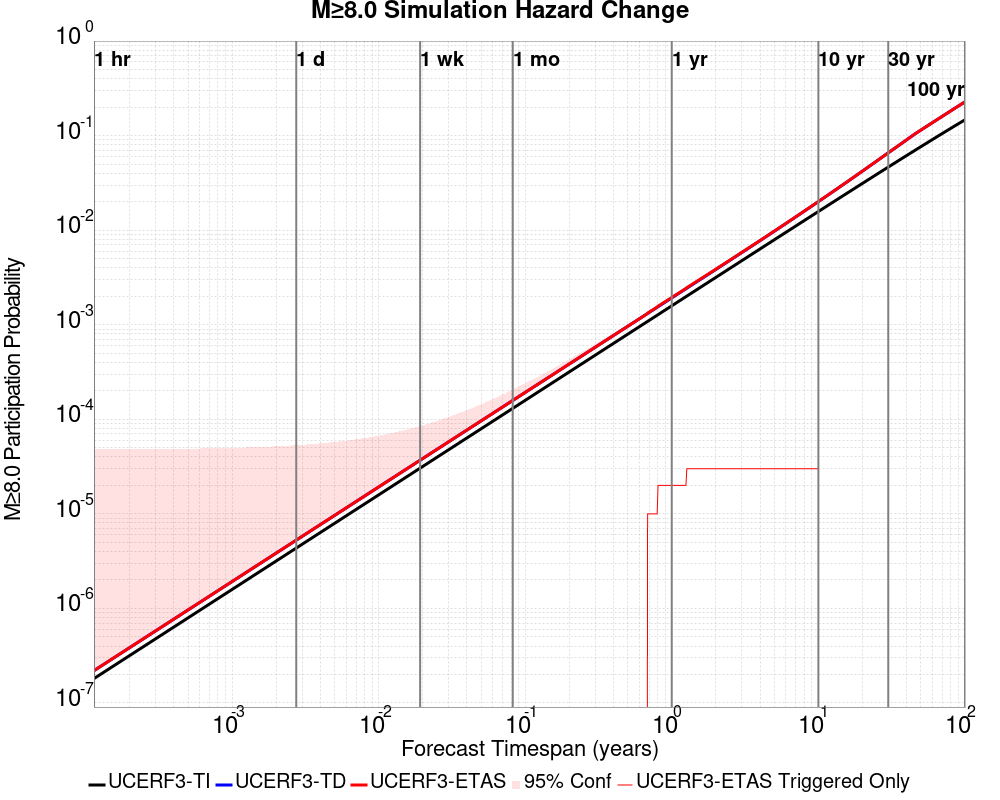
| Forecast Duration | UCERF3-ETAS [95% Conf] | UCERF3-ETAS Triggered Only | UCERF3-TD | UCERF3-ETAS/TD Gain | UCERF3-TI |
|---|---|---|---|---|---|
| 1 Hour | 2.20E-7 [2.20E-7 - 4.81E-5] | 0.000 | 2.20E-7 | 1 | 1.81E-7 |
| 1 Day | 5.27E-6 [5.27E-6 - 5.32E-5] | 0.000 | 5.27E-6 | 1 | 4.35E-6 |
| 1 Week | 3.69E-5 [3.69E-5 - 8.48E-5] | 0.000 | 3.69E-5 | 1 | 3.04E-5 |
| 1 Month | 1.58E-4 [1.58E-4 - 2.06E-4] | 0.000 | 1.58E-4 | 1 | 1.30E-4 |
| 1 Year | 1.94E-3 [1.93E-3 - 2.00E-3] | 2.00E-5 | 1.92E-3 | 1.01 | 1.59E-3 |
| 10 Years | 0.020 [0.020 - 0.020] | 3.00E-5 | 0.020 | 1 | 0.016 |
| 30 Years | 0.066 [0.066 - 0.066] * | * | 0.066 | 1 * | 0.047 |
| 100 Years | 0.228 [0.228 - 0.228] * | * | 0.228 | 1 * | 0.147 |
* forecast duration is longer than simulation length, only ETAS ruptures from the first 10 years are included
| Section Name | Strike, Dip, Rake | # Hypos In Poly | Max Mag w/ Hypo In Poly | # Surfs In Poly | Max Mag w/ Surf In Poly | Min Dist To Any (km) | Min Poly Dist To Any (km) | Min Dist To Largest (km) | Min Poly Dist To Largest (km) |
|---|---|---|---|---|---|---|---|---|---|
| San Andreas (Creeping Section) 2011 CFM | 317, 90, 180 | 2 | 4.71 | 2 | 4.71 | 0.399 | 0.000 | 1.260 | 0.000 |
| Calaveras (So) - Paicines extension 2011 CFM | 141, 77, 180 | 2 | 4.71 | 2 | 4.71 | 2.165 | 0.000 | 2.165 | 0.000 |
| Greenville (So) 2011 CFM | 347, 87, 180 | 2 | 2.87 | 2 | 2.87 | 3.909 | 0.000 | 69.471 | 69.402 |
| Calaveras (Central) 2011 CFM | 329, 77, 180 | 1 | 3.25 | 1 | 3.25 | 0.380 | 0.000 | 50.452 | 38.639 |
| Franklin 2011 CFM | 326, 90, 180 | 1 | 4.46 | 1 | 4.46 | 3.464 | 0.000 | 149.461 | 148.547 |
| Concord 2011 CFM | 152, 90, 180 | 1 | 4.46 | 1 | 4.46 | 3.636 | 0.000 | 152.814 | 152.466 |
| Contra Costa Shear Zone (connector) 2011 CFM | 157, 81, 180 | 1 | 4.46 | 1 | 4.46 | 7.540 | 0.000 | 158.347 | 151.478 |
| Hayward (So) extension 2011 CFM | 326, 48, 135 | 0 | 0 | 4.201 | 0.495 | 74.272 | 72.984 | ||
| Hayward (So) 2011 CFM | 322, 76, 180 | 0 | 0 | 5.302 | 5.089 | 95.761 | 94.696 | ||
| Contra Costa (Lafayette) 2011 CFM | 346, 90, 180 | 0 | 0 | 5.433 | 0.152 | 152.049 | 149.448 | ||
| Silver Creek 2011 CFM | 322, 75, 180 | 0 | 0 | 7.932 | 3.316 | 66.903 | 65.234 | ||
| Mount Diablo Thrust North CFM | 318, 40, 90 | 0 | 0 | 9.096 | 3.881 | 137.257 | 136.973 | ||
| Clayton | 142, 90, 180 | 0 | 0 | 9.374 | 1.786 | 143.967 | 140.866 | ||
| Calaveras (No) 2011 CFM | 155, 80, 180 | 0 | 0 | 11.479 | 9.457 | 101.970 | 100.340 | ||
| Mission (connected) 2011 CFM | 134, 90, 180 | 0 | 0 | 11.877 | 10.908 | 101.966 | 98.948 | ||
| Green Valley 2011 CFM | 164, 84, 180 | 0 | 0 | 12.105 | 12.039 | 171.104 | 169.607 | ||
| Quien Sabe 2011 CFM | 144, 85, 180 | 0 | 0 | 12.390 | 6.043 | 12.390 | 6.043 | ||
| Los Medanos - Roe Island | 309, 39, 90 | 0 | 0 | 16.811 | 9.370 | 158.589 | 158.283 | ||
| Hayward (No) 2011 CFM | 331, 82, 180 | 0 | 0 | 16.827 | 8.561 | 149.185 | 148.998 | ||
| Greenville (No) 2011 CFM | 324, 84, 180 | 0 | 0 | 18.306 | 11.733 | 98.626 | 95.007 | ||
| Ortigalita (North) | 326, 90, 180 | 0 | 0 | 18.872 | 8.856 | 44.176 | 34.149 |
These are map plots of individual catalogs from the simulations, selected as the closest catalog to each of the given percentiles in terms of total number of events.
| Duration | p0.0 %-ile | p25.0 %-ile | p50.0 %-ile | p75.0 %-ile | p90.0 %-ile | p95.0 %-ile | p97.5 %-ile | p98.0 %-ile | p99.0 %-ile | p99.5 %-ile | p99.9 %-ile | p99.999 %-ile |
|---|---|---|---|---|---|---|---|---|---|---|---|---|
| 1 Week |  |  |  |  |  |  |  |  |  |  | ||
| 1 Month |  |  |  |  |  |  |  |  |  |  | ||
| 1 Year |  |  |  |  |  |  |  |  |  |  | ||
| 10 Year |  |  |  |  |  | 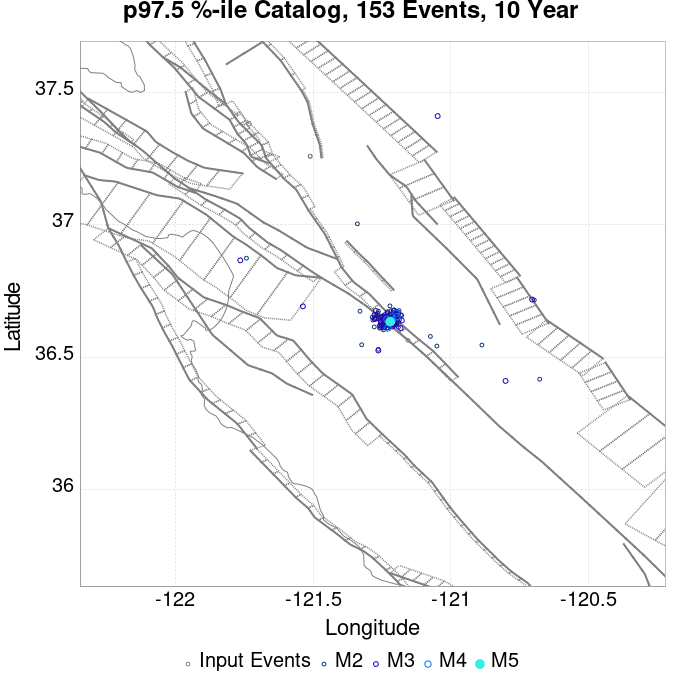 |  |  |  | 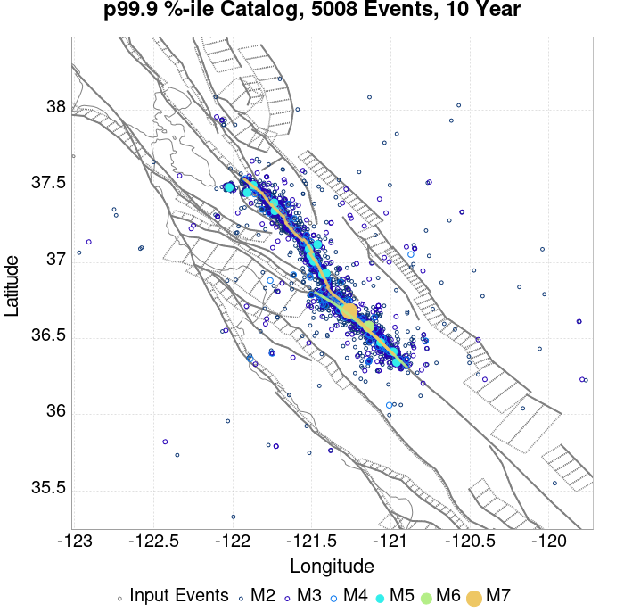 |
These plots compare simulated sequences with data from ComCat. All plots only consider events with hypocenters inside the ComCat region defined in the JSON input file.
Last updated at 2019/10/16 09:33:45 UTC, 13.9 hr after the simulation start time
| Incremental MND | Cumulative MND |
|---|---|
 |  |
The following plots compare simulation results with ComCat data above a magnitude threshold. Plots labeled as M≥Mc(t) use the time-dependent magnitude of completeness (Mc) defined in Helmstetter et al. (2006), which is plotted below. In the case of multiple M≥5 ruptures, either as input to the simulation or in the comparison data, the maximum calculated time-dependent Mc is used. This time-dependent Mc function is plotted below.

| M≥Mc(t) | M≥3 | M≥3.5 | M≥4 | M≥4.5 | M≥5 |
|---|---|---|---|---|---|
 |  | 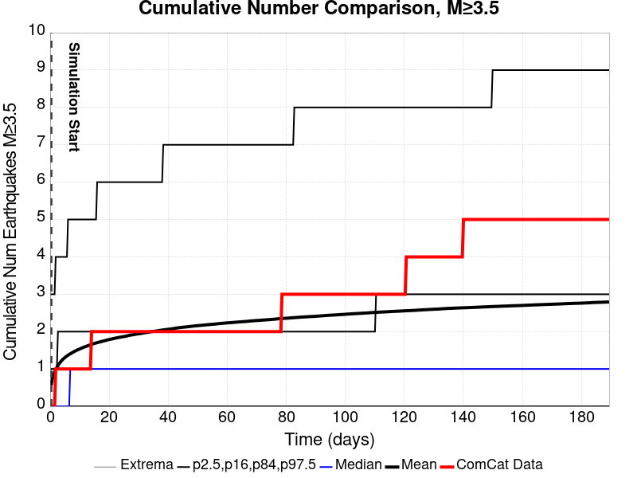 |  | 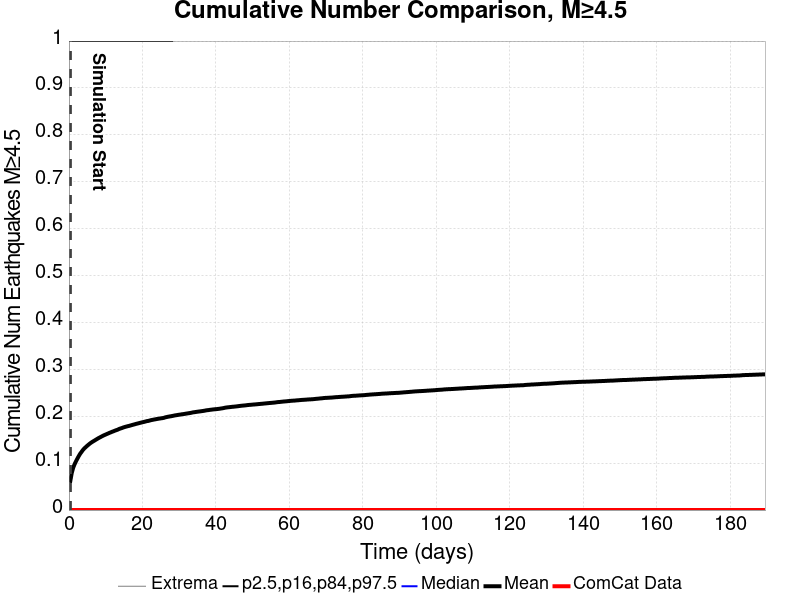 | 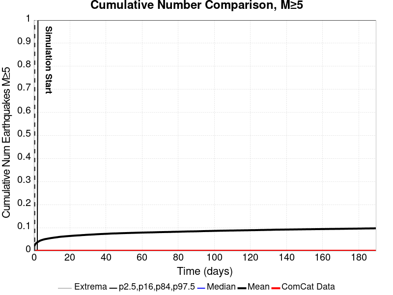 |

| Current (13.9 Hour) | |
|---|---|
| M≥Mc(t) |  |
| M≥3 |  |
| M≥3.5 | 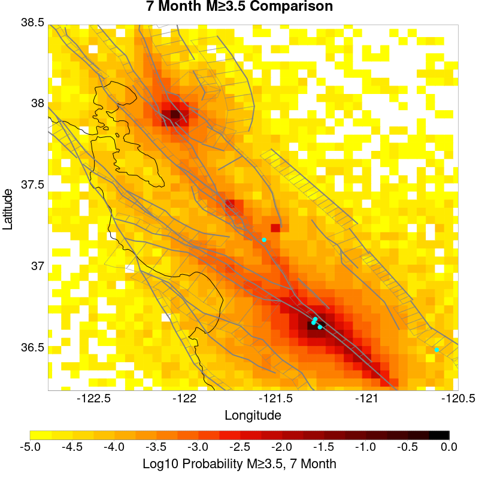 |
| M≥4 |  |
| M≥4.5 |  |
| M≥5 |  |
| M≥5.5 |  |
| Current (13.9 Hour) | |
|---|---|
| M≥Mc(t) |  |
| M≥3 | 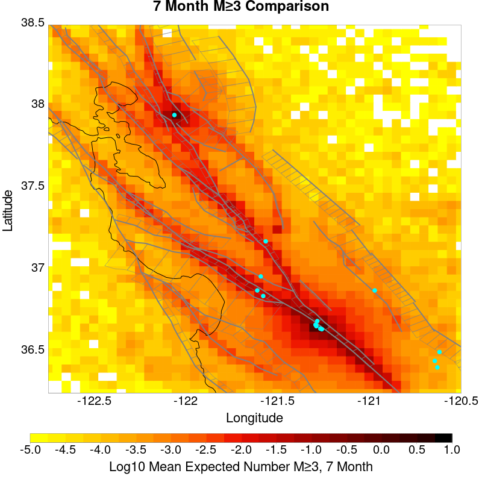 |
| M≥3.5 | 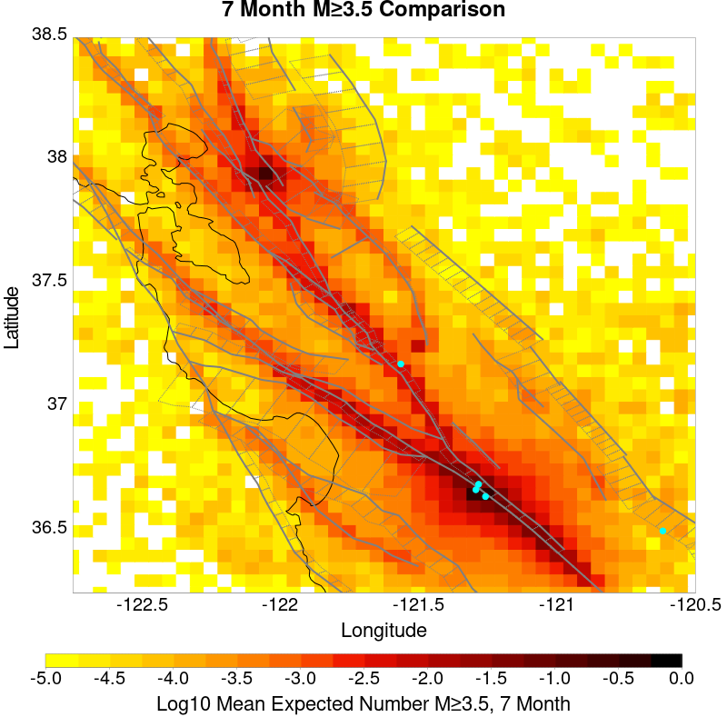 |
| M≥4 |  |
| M≥4.5 |  |
| M≥5 |  |
| M≥5.5 | 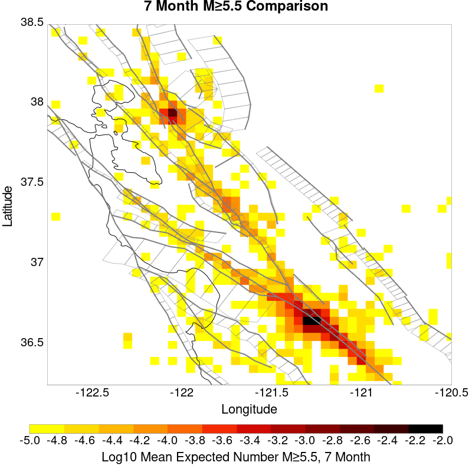 |
| M≥Mc(t) | M≥3 | M≥3.5 | M≥4 | M≥4.5 | M≥5 | M≥5.5 |
|---|---|---|---|---|---|---|
 | 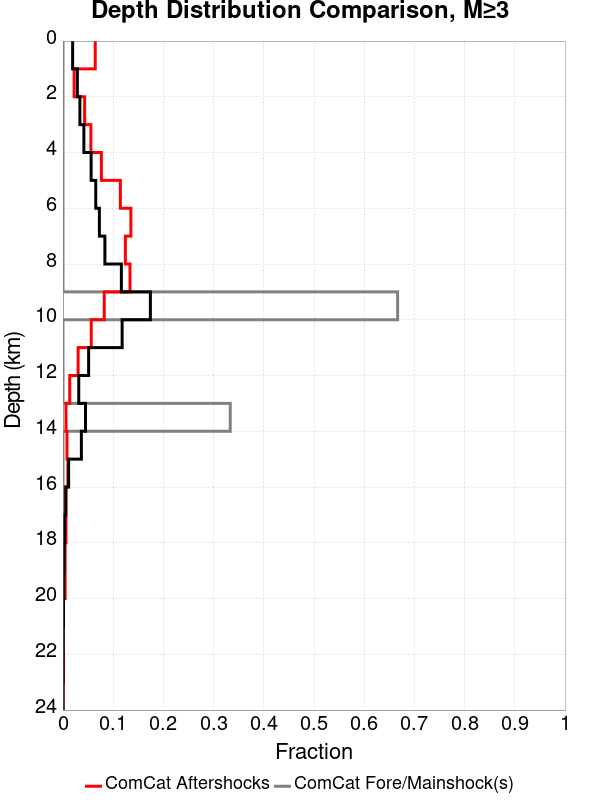 |  |  | 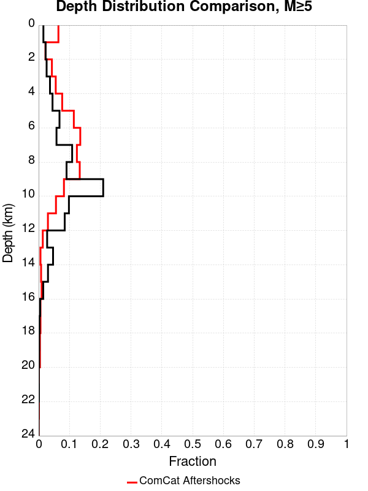 |  |
| Min Mag | 1 yr Triggered Ruptures (no spontaneous) | 10 yr Triggered Ruptures (no spontaneous) | 10 yr Triggered Ruptures (primary aftershocks only) |
|---|---|---|---|
| All Supra. Seis. |  |  | |
| M≥6.5 |  |  | |
| M≥7 |  |  |  |
| M≥7.5 |  |  | 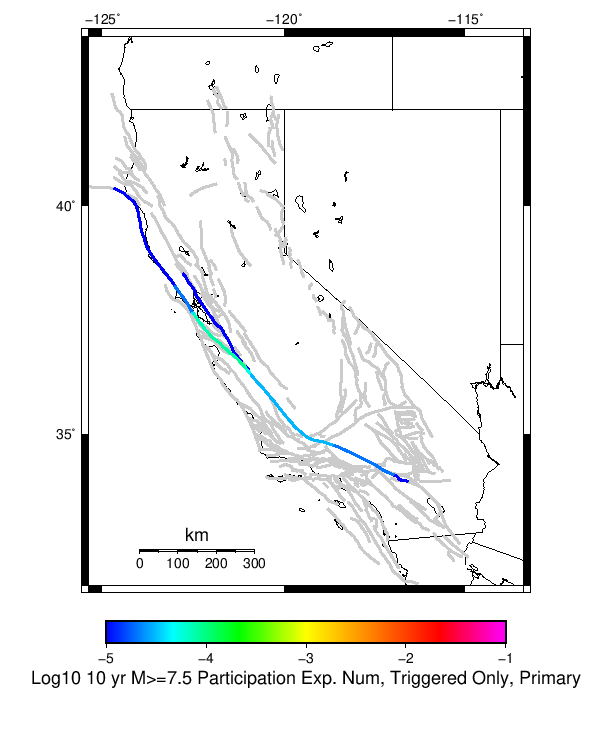 |
| M≥8 |  |  |  |
First 10 of 80 with matching ruptures shown
| Parent Name | Triggered 10 Year Mean Count | Triggered 1 Day Prob | Triggered 1 Week Prob | Triggered 1 Month Prob | Triggered 1 Year Prob | Triggered 10 Year Prob | Triggered 10 Year Primary Mean Count |
|---|---|---|---|---|---|---|---|
| San Andreas (Creeping Section) 2011 CFM | 0.01704 | 0.00586 | 0.00826 | 0.01013 | 0.01285 | 0.0154 | 0.00937 |
| Calaveras (So) - Paicines extension 2011 CFM | 0.0046 | 0.00156 | 0.00219 | 0.00263 | 0.00355 | 0.00434 | 0.00223 |
| Calaveras (So) 2011 CFM | 0.00169 | 4.7E-4 | 7.7E-4 | 9.6E-4 | 0.00135 | 0.00168 | 6.3E-4 |
| Concord 2011 CFM | 0.00145 | 1.2E-4 | 3.6E-4 | 5.7E-4 | 0.00103 | 0.00142 | 8.0E-4 |
| Green Valley 2011 CFM | 0.0013 | 1.1E-4 | 3.1E-4 | 4.8E-4 | 8.8E-4 | 0.00124 | 7.0E-4 |
| San Andreas (Santa Cruz Mts) 2011 CFM | 0.0012 | 4.5E-4 | 6.5E-4 | 7.2E-4 | 9.7E-4 | 0.0012 | 5.9E-4 |
| Calaveras (Central) 2011 CFM | 0.00113 | 2.6E-4 | 4.7E-4 | 5.7E-4 | 8.4E-4 | 0.00104 | 4.0E-4 |
| Hayward (So) 2011 CFM | 5.8E-4 | 4.0E-5 | 1.1E-4 | 1.6E-4 | 3.1E-4 | 5.0E-4 | 9.0E-5 |
| Hayward (So) extension 2011 CFM | 4.8E-4 | 6.0E-5 | 1.1E-4 | 1.6E-4 | 3.2E-4 | 4.2E-4 | 6.0E-5 |
| Calaveras (No) 2011 CFM | 3.7E-4 | 8.0E-5 | 1.4E-4 | 1.8E-4 | 3.0E-4 | 3.7E-4 | 1.5E-4 |
First 10 of 67 with matching ruptures shown
| Parent Name | Triggered 10 Year Mean Count | Triggered 1 Day Prob | Triggered 1 Week Prob | Triggered 1 Month Prob | Triggered 1 Year Prob | Triggered 10 Year Prob | Triggered 10 Year Primary Mean Count |
|---|---|---|---|---|---|---|---|
| San Andreas (Creeping Section) 2011 CFM | 0.00441 | 0.00141 | 0.00222 | 0.00268 | 0.00344 | 0.0042 | 0.00221 |
| Calaveras (So) - Paicines extension 2011 CFM | 0.00228 | 6.9E-4 | 0.00107 | 0.00134 | 0.00179 | 0.00218 | 9.9E-4 |
| Calaveras (So) 2011 CFM | 0.00151 | 4.6E-4 | 7.1E-4 | 8.8E-4 | 0.00122 | 0.00151 | 6.1E-4 |
| San Andreas (Santa Cruz Mts) 2011 CFM | 0.00118 | 4.5E-4 | 6.4E-4 | 7.1E-4 | 9.6E-4 | 0.00118 | 5.9E-4 |
| Calaveras (Central) 2011 CFM | 0.00103 | 2.6E-4 | 4.6E-4 | 5.5E-4 | 7.8E-4 | 9.6E-4 | 3.7E-4 |
| Hayward (So) 2011 CFM | 5.3E-4 | 4.0E-5 | 1.0E-4 | 1.5E-4 | 2.7E-4 | 4.7E-4 | 9.0E-5 |
| Green Valley 2011 CFM | 4.7E-4 | 4.0E-5 | 8.0E-5 | 1.3E-4 | 3.0E-4 | 4.7E-4 | 2.4E-4 |
| Concord 2011 CFM | 4.6E-4 | 4.0E-5 | 7.0E-5 | 1.3E-4 | 2.8E-4 | 4.5E-4 | 2.5E-4 |
| Calaveras (No) 2011 CFM | 3.7E-4 | 8.0E-5 | 1.4E-4 | 1.8E-4 | 3.0E-4 | 3.7E-4 | 1.5E-4 |
| Hayward (So) extension 2011 CFM | 2.0E-4 | 0.0 | 3.0E-5 | 5.0E-5 | 1.2E-4 | 2.0E-4 | 2.0E-5 |
First 10 of 55 with matching ruptures shown
| Parent Name | Triggered 10 Year Mean Count | Triggered 1 Day Prob | Triggered 1 Week Prob | Triggered 1 Month Prob | Triggered 1 Year Prob | Triggered 10 Year Prob | Triggered 10 Year Primary Mean Count |
|---|---|---|---|---|---|---|---|
| San Andreas (Creeping Section) 2011 CFM | 0.00137 | 5.0E-4 | 7.1E-4 | 8.1E-4 | 0.00112 | 0.00136 | 6.7E-4 |
| San Andreas (Santa Cruz Mts) 2011 CFM | 0.00116 | 4.5E-4 | 6.4E-4 | 7.0E-4 | 9.5E-4 | 0.00116 | 5.8E-4 |
| Calaveras (So) - Paicines extension 2011 CFM | 6.8E-4 | 1.9E-4 | 3.3E-4 | 3.8E-4 | 5.3E-4 | 6.5E-4 | 2.3E-4 |
| Calaveras (Central) 2011 CFM | 5.6E-4 | 1.3E-4 | 2.3E-4 | 2.9E-4 | 4.4E-4 | 5.6E-4 | 1.7E-4 |
| Calaveras (So) 2011 CFM | 5.3E-4 | 1.3E-4 | 2.4E-4 | 2.9E-4 | 4.2E-4 | 5.3E-4 | 1.6E-4 |
| Calaveras (No) 2011 CFM | 2.7E-4 | 8.0E-5 | 1.2E-4 | 1.4E-4 | 2.1E-4 | 2.7E-4 | 1.0E-4 |
| Hayward (So) 2011 CFM | 2.0E-4 | 3.0E-5 | 8.0E-5 | 9.0E-5 | 1.3E-4 | 2.0E-4 | 5.0E-5 |
| Hayward (No) 2011 CFM | 1.3E-4 | 1.0E-5 | 5.0E-5 | 5.0E-5 | 7.0E-5 | 1.3E-4 | 3.0E-5 |
| San Andreas (Parkfield) | 1.2E-4 | 4.0E-5 | 5.0E-5 | 7.0E-5 | 1.0E-4 | 1.2E-4 | 9.0E-5 |
| San Andreas (Peninsula) 2011 CFM | 1.2E-4 | 4.0E-5 | 5.0E-5 | 6.0E-5 | 1.0E-4 | 1.2E-4 | 9.0E-5 |
First 10 of 40 with matching ruptures shown
| Parent Name | Triggered 10 Year Mean Count | Triggered 1 Day Prob | Triggered 1 Week Prob | Triggered 1 Month Prob | Triggered 1 Year Prob | Triggered 10 Year Prob | Triggered 10 Year Primary Mean Count |
|---|---|---|---|---|---|---|---|
| San Andreas (Creeping Section) 2011 CFM | 1.4E-4 | 3.0E-5 | 5.0E-5 | 6.0E-5 | 1.2E-4 | 1.4E-4 | 9.0E-5 |
| San Andreas (Santa Cruz Mts) 2011 CFM | 1.2E-4 | 3.0E-5 | 4.0E-5 | 5.0E-5 | 1.0E-4 | 1.2E-4 | 8.0E-5 |
| San Andreas (Peninsula) 2011 CFM | 1.1E-4 | 3.0E-5 | 4.0E-5 | 5.0E-5 | 9.0E-5 | 1.1E-4 | 8.0E-5 |
| Calaveras (So) - Paicines extension 2011 CFM | 7.0E-5 | 0.0 | 3.0E-5 | 3.0E-5 | 4.0E-5 | 7.0E-5 | 2.0E-5 |
| Calaveras (Central) 2011 CFM | 6.0E-5 | 0.0 | 3.0E-5 | 3.0E-5 | 4.0E-5 | 6.0E-5 | 1.0E-5 |
| Calaveras (So) 2011 CFM | 6.0E-5 | 0.0 | 3.0E-5 | 3.0E-5 | 4.0E-5 | 6.0E-5 | 1.0E-5 |
| Hayward (No) 2011 CFM | 6.0E-5 | 0.0 | 3.0E-5 | 3.0E-5 | 3.0E-5 | 6.0E-5 | 1.0E-5 |
| Hayward (So) 2011 CFM | 6.0E-5 | 0.0 | 3.0E-5 | 3.0E-5 | 3.0E-5 | 6.0E-5 | 1.0E-5 |
| Rodgers Creek - Healdsburg 2011 CFM | 6.0E-5 | 0.0 | 3.0E-5 | 3.0E-5 | 3.0E-5 | 6.0E-5 | 1.0E-5 |
| San Andreas (Big Bend) | 5.0E-5 | 1.0E-5 | 1.0E-5 | 1.0E-5 | 4.0E-5 | 5.0E-5 | 3.0E-5 |
First 10 of 23 with matching ruptures shown
| Parent Name | Triggered 10 Year Mean Count | Triggered 1 Day Prob | Triggered 1 Week Prob | Triggered 1 Month Prob | Triggered 1 Year Prob | Triggered 10 Year Prob | Triggered 10 Year Primary Mean Count |
|---|---|---|---|---|---|---|---|
| San Andreas (Big Bend) | 3.0E-5 | 0.0 | 0.0 | 0.0 | 2.0E-5 | 3.0E-5 | 1.0E-5 |
| San Andreas (Carrizo) rev | 3.0E-5 | 0.0 | 0.0 | 0.0 | 2.0E-5 | 3.0E-5 | 1.0E-5 |
| San Andreas (Cholame) rev | 3.0E-5 | 0.0 | 0.0 | 0.0 | 2.0E-5 | 3.0E-5 | 1.0E-5 |
| San Andreas (Creeping Section) 2011 CFM | 3.0E-5 | 0.0 | 0.0 | 0.0 | 2.0E-5 | 3.0E-5 | 1.0E-5 |
| San Andreas (Mojave N) | 3.0E-5 | 0.0 | 0.0 | 0.0 | 2.0E-5 | 3.0E-5 | 1.0E-5 |
| San Andreas (Mojave S) | 3.0E-5 | 0.0 | 0.0 | 0.0 | 2.0E-5 | 3.0E-5 | 1.0E-5 |
| San Andreas (Parkfield) | 3.0E-5 | 0.0 | 0.0 | 0.0 | 2.0E-5 | 3.0E-5 | 1.0E-5 |
| San Andreas (San Bernardino N) | 3.0E-5 | 0.0 | 0.0 | 0.0 | 2.0E-5 | 3.0E-5 | 1.0E-5 |
| San Andreas (Santa Cruz Mts) 2011 CFM | 3.0E-5 | 0.0 | 0.0 | 0.0 | 2.0E-5 | 3.0E-5 | 1.0E-5 |
| San Andreas (Peninsula) 2011 CFM | 2.0E-5 | 0.0 | 0.0 | 0.0 | 1.0E-5 | 2.0E-5 | 1.0E-5 |
The first 5 sections (sorted by trigger rate) are plotted below. All fault MPDs are available here
| 1 Week | 1 Month | 1 Year | 10 Year |
|---|---|---|---|
 |  |  |  |
 |  |  |  |
 |  |  |  |
 |  |  |  |
 | 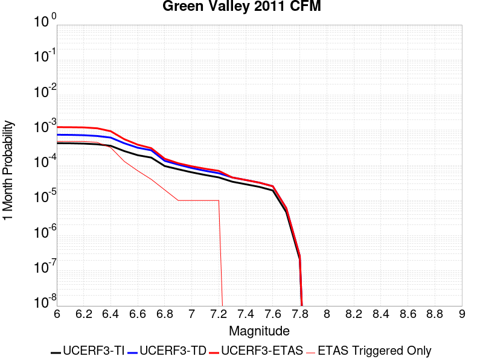 |  |  |
| Min Mag | Triggered Ruptures (no spontaneous) | Triggered Ruptures (primary aftershocks only) |
|---|---|---|
| M≥2.5 |  |  |
| M≥5 |  |  |
| M≥6 |  |  |
| M≥7 |  |  |
{
"numSimulations": 100000,
"duration": 10.0,
"startTimeMillis": 1571168551550,
"includeSpontaneous": false,
"randomSeed": 1571173106462,
"binaryOutput": true,
"binaryOutputFilters": [
{
"prefix": "results_complete",
"descendantsOnly": false
},
{
"prefix": "results_m5_preserve_chain",
"minMag": 5.0,
"preserveChainBelowMag": true,
"descendantsOnly": false
}
],
"forceRecalc": false,
"simulationName": "ComCat M4.71 (nc73292360), Point Sources",
"numRetries": 3,
"outputDir": "${ETAS_SIM_DIR}/2019_10_15-ComCatM4p71_nc73292360_PointSources",
"triggerRuptures": [
{
"occurrenceTimeMillis": 1570612516640,
"comcatEventID": "nc73289220",
"mag": 3.25,
"latitude": 37.3818333,
"longitude": -121.73283330000001,
"depth": 9.27
},
{
"occurrenceTimeMillis": 1571009527260,
"comcatEventID": "nc73291290",
"mag": 2.87,
"latitude": 37.2589989,
"longitude": -121.51066590000002,
"depth": 7.8
},
{
"occurrenceTimeMillis": 1571016328610,
"comcatEventID": "nc73291345",
"mag": 2.56,
"latitude": 37.2593346,
"longitude": -121.50966639999999,
"depth": 7.97
},
{
"occurrenceTimeMillis": 1571117622810,
"comcatEventID": "nc73291880",
"mag": 4.46,
"latitude": 37.938,
"longitude": -122.05700000000002,
"depth": 13.97
},
{
"occurrenceTimeMillis": 1571134783260,
"comcatEventID": "nc73292185",
"mag": 2.68,
"latitude": 36.5639992,
"longitude": -121.1555023,
"depth": 2.69
},
{
"occurrenceTimeMillis": 1571168550550,
"comcatEventID": "nc73292360",
"mag": 4.71,
"latitude": 36.649334,
"longitude": -121.2740021,
"depth": 9.72
}
],
"cacheDir": "${ETAS_LAUNCHER}/inputs/cache_fm3p1_ba",
"fssFile": "${ETAS_LAUNCHER}/inputs/2013_05_10-ucerf3p3-production-10runs_COMPOUND_SOL_FM3_1_SpatSeisU3_MEAN_BRANCH_AVG_SOL.zip",
"probModel": "FULL_TD",
"applySubSeisForSupraNucl": true,
"totRateScaleFactor": 1.14,
"gridSeisCorr": true,
"timeIndependentERF": false,
"griddedOnly": false,
"imposeGR": false,
"includeIndirectTriggering": true,
"gridSeisDiscr": 0.1,
"catalogCompletenessModel": "RELAXED",
"configCommand": "u3etas_comcat_event_config_builder.sh --event-id nc73292360 --region 38.5,-122.75,36.25,-120.5 --num-simulations 100000 --days-before 7 --hpc-site USC_HPC --nodes 36 --hours 24 --queue scec",
"configTime": 1571173106462,
"comcatMetadata": {
"region": {
"minLatitude": 36.249999999999,
"maxLatitude": 38.500000000001,
"minLongitude": -122.750000000001,
"maxLongitude": -120.49999999999902
},
"eventID": "nc73292360",
"minDepth": -10.0,
"maxDepth": 24.0,
"minMag": 2.5,
"startTime": 1570563750550,
"endTime": 1571168550551
}
}